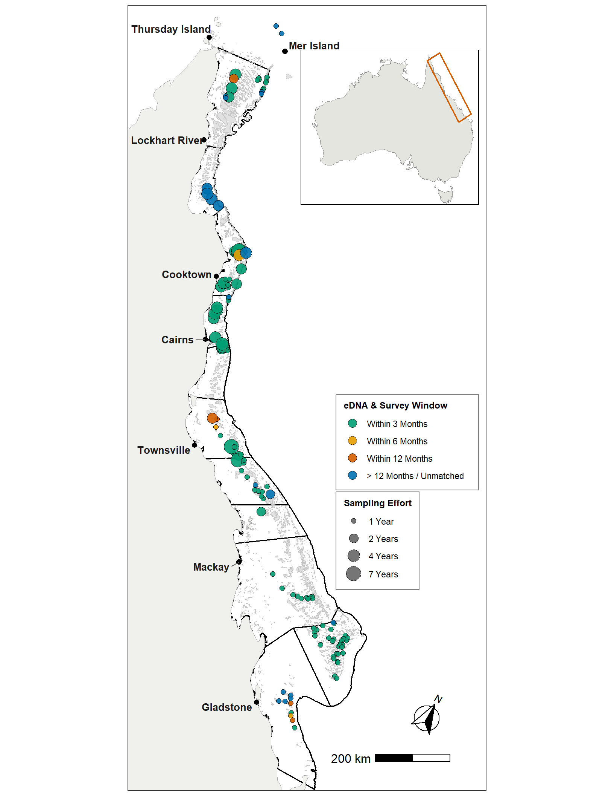
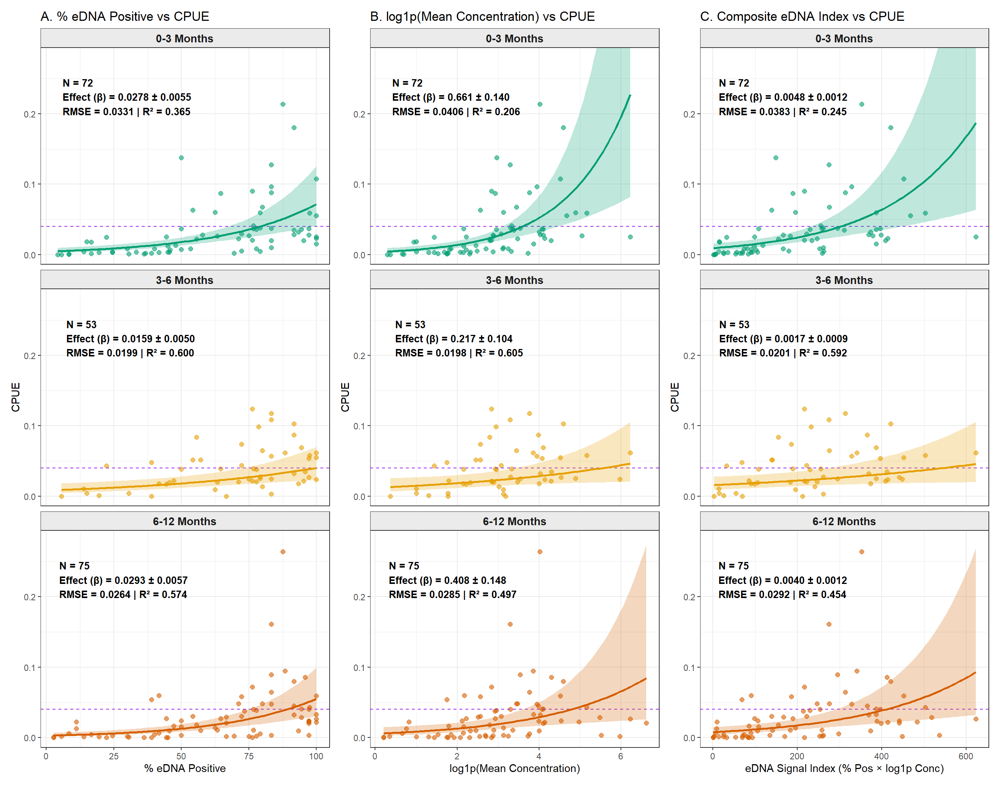
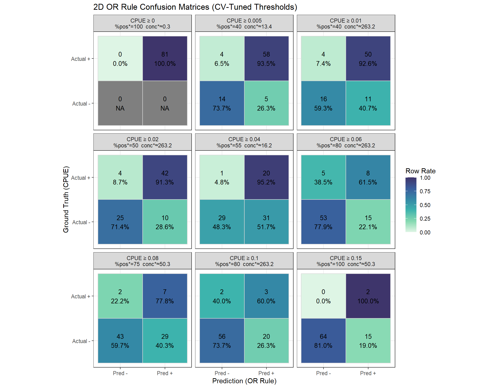
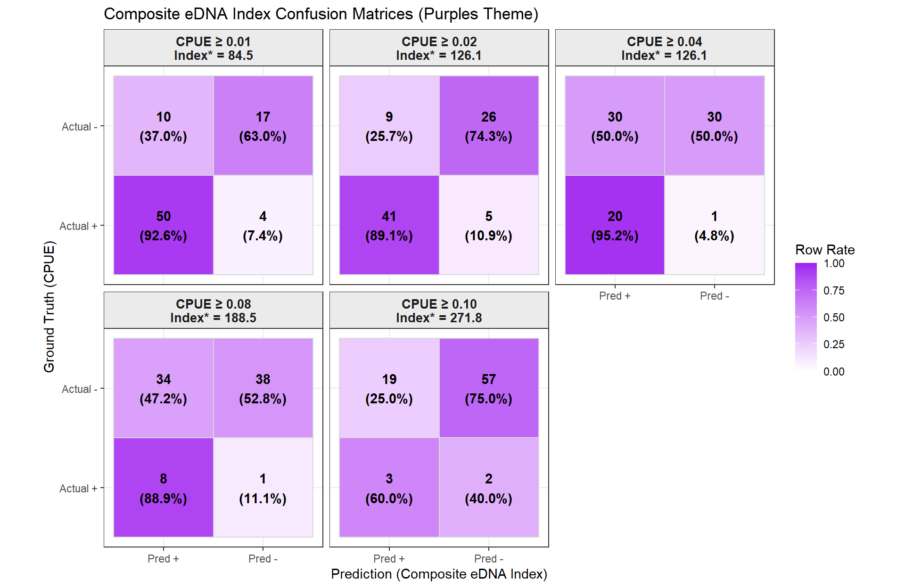
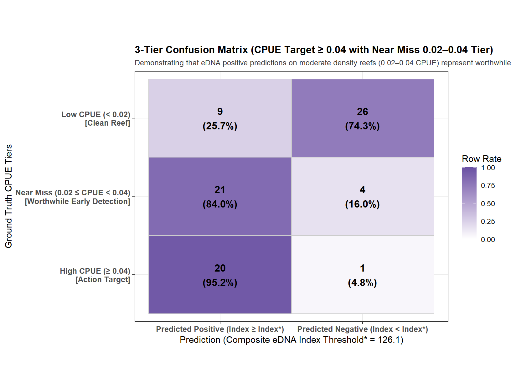
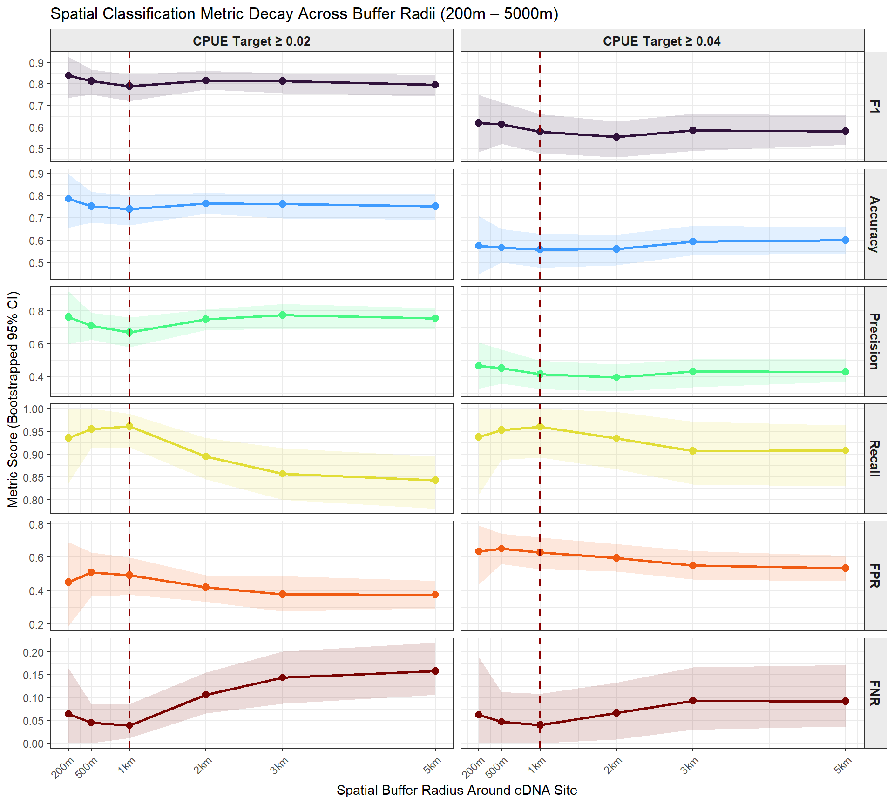
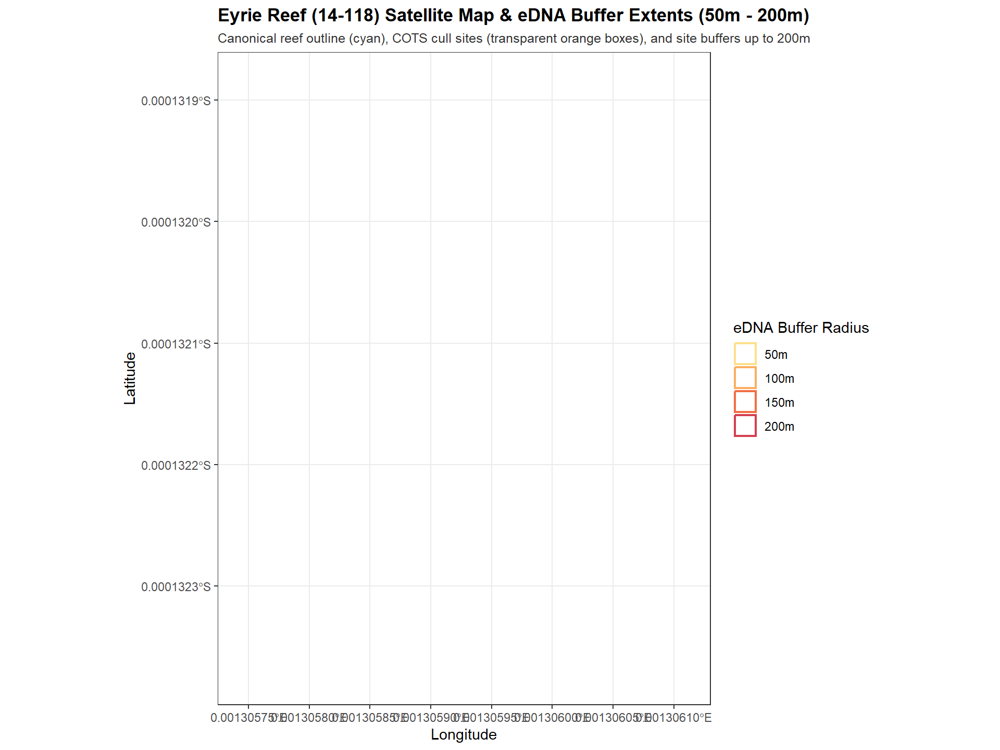
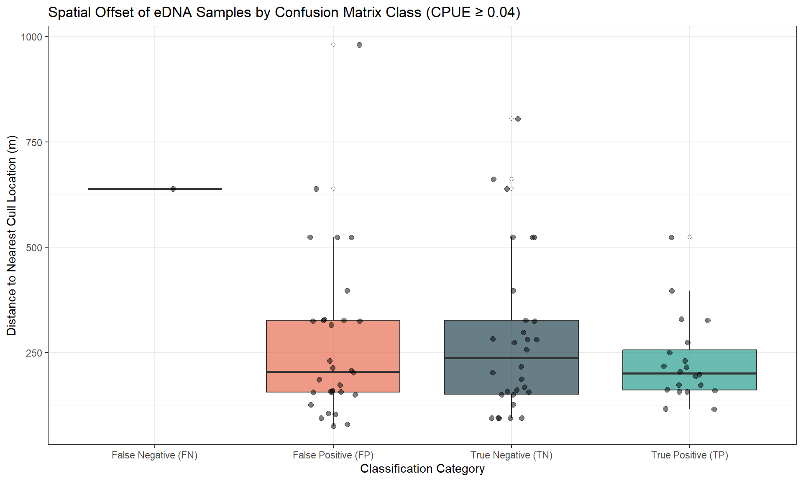

Code
# Formatting labels for linear models
# Confusion matrices and Evaluation MetricsLoad the necessary libraries and create helper functions that will be used for modeling, evaluation, and plotting throughout the analysis.
# Formatting labels for linear models
# Confusion matrices and Evaluation MetricsRead raw CPUE (cull) and eDNA data.
Analytical Fixes Implemented: - Swapped CSV reading for native Excel reading via readxl. - Removed explicit character-to-date formatting strings ("%d/%m/%Y") that fail on native Excel timestamps, substituting to rely on as.Date acting structurally on numeric-date representations. - Extracted and normalized column names with explicit checks.
# Load Cull data
cull.dat <- read_excel("data/260529-COTS-Manta-Cull-RHIS-Lawrence-CSIRO.xlsx", sheet = "Cull")
# Load eDNA data
edna.dat <- read_excel("data/eDNA data_ALL_20260528.xlsx", sheet = "eDNA_data_ALL")
# Clean Cull Data
cull <- cull.dat %>%
rename(Reef = ReefName) %>%
mutate(date_cull = as.Date(SurveyDate))
# Aggregate eDNA data
edna_agg <- edna.dat %>%
filter(!is.na(Year)) %>%
rename(Collection.organisation = `Collection organisation`) %>%
mutate(
Reef = ReefName,
Collection.org = ifelse(Collection.organisation == "AIMS", "AIMS", "Other"),
date_edna = as.Date(Date), # Excel supplies native dates
Conc_mean = as.numeric(Conc_mean)
) %>%
arrange(Reef, Year, date_edna) %>%
group_by(Reef, Collection.org, Year) %>%
# cluster rows into groups where consecutive samples are ≤ 7 days apart
mutate(
grp = cumsum(
if_else(
is.na(lag(date_edna)) | as.numeric(date_edna - lag(date_edna)) > 7,
1L, 0L
)
)
) %>%
ungroup() %>%
group_by(Reef, Collection.org, Year, grp) %>%
summarise(
date_edna = min(date_edna),
conc_mean = mean(Conc_mean, na.rm = TRUE),
perc_pos = mean(LOD_sample_positive, na.rm = TRUE) * 100,
n_samples = n(),
.groups = "drop"
)To visualize the geographic extent of eDNA sampling across the Great Barrier Reef (GBR) and evaluate its operational alignment with field surveillance and control operations (Cull, Manta, and RHIS surveys), we mapped all sampled reef locations (n = 127). Each reef is scaled by total sampling effort (number of sampled years, 1–7 years) and color-coded by its temporal proximity window (Within 3 Months, Within 6 Months, Within 12 Months, and >12 Months / Unmatched).
library(sf)
library(ggplot2)
library(dplyr)
library(readxl)
library(lubridate)
library(rnaturalearth)
library(ggspatial)
library(ggrepel)
library(cowplot)
sf_use_s2(FALSE)
# 1. Load reef spatial geometries, sector shapefile, and Australia land mass
gpkg_path <- "data/rrap_canonical_2025-03-20-T15-18-17.gpkg"
shp_path <- "data/SectorShapefile"
gbr_reefs <- st_read(gpkg_path, quiet = TRUE) %>% st_transform(4326)
sector_sf <- st_read(shp_path, quiet = TRUE) %>% st_transform(4326)
aus_land <- ne_countries(country = "australia", scale = "medium", returnclass = "sf")
# 2. Extract eDNA Reef Centerpoints and Effort (Years)
edna_reef <- edna.dat %>%
filter(!is.na(Lat), !is.na(Long), !is.na(Date)) %>%
mutate(
Reef = ReefName,
date_edna = as.Date(Date),
Year = year(date_edna)
) %>%
group_by(Reef) %>%
summarise(
Lat = mean(Lat, na.rm = TRUE),
Long = mean(Long, na.rm = TRUE),
n_years = n_distinct(Year),
n_samples = n(),
.groups = "drop"
)
edna_dates <- edna.dat %>%
filter(!is.na(Date)) %>%
transmute(Reef = ReefName, date_edna = as.Date(Date)) %>%
distinct()
# 3. Load all survey dates across Cull, Manta, and RHIS sheets
manta.dat <- read_excel("data/260529-COTS-Manta-Cull-RHIS-Lawrence-CSIRO.xlsx", sheet = "Manta")
rhis.dat <- read_excel("data/260529-COTS-Manta-Cull-RHIS-Lawrence-CSIRO.xlsx", sheet = "RHIS")
all_surveys <- bind_rows(
cull.dat %>% filter(!is.na(SurveyDate), !is.na(ReefName)) %>% transmute(Reef = ReefName, date_survey = as.Date(SurveyDate)),
manta.dat %>% filter(!is.na(SurveyTime), !is.na(ReefName)) %>% transmute(Reef = ReefName, date_survey = as.Date(SurveyTime)),
rhis.dat %>% filter(!is.na(SurveyTime), !is.na(ReefName)) %>% transmute(Reef = ReefName, date_survey = as.Date(SurveyTime))
) %>% distinct()
# 4. Calculate nearest temporal alignment window (in absolute days) per eDNA reef
pairs <- edna_dates %>%
inner_join(all_surveys, by = "Reef", relationship = "many-to-many") %>%
mutate(diff_days = abs(as.numeric(date_survey - date_edna)))
abs_match <- pairs %>%
group_by(Reef, date_edna) %>%
summarise(min_abs_diff = min(diff_days), .groups = "drop") %>%
group_by(Reef) %>%
summarise(reef_min_diff = min(min_abs_diff), .groups = "drop")
edna_map_df <- edna_reef %>%
left_join(abs_match, by = "Reef") %>%
mutate(
window = case_when(
is.na(reef_min_diff) ~ "> 12 Months",
reef_min_diff <= 91 ~ "Within 3 Months",
reef_min_diff <= 183 ~ "Within 6 Months",
reef_min_diff <= 365 ~ "Within 12 Months",
TRUE ~ "> 12 Months"
),
window = factor(window, levels = c("Within 3 Months", "Within 6 Months", "Within 12 Months", "> 12 Months"))
)
edna_sf <- st_as_sf(edna_map_df, coords = c("Long", "Lat"), crs = 4326)# Coastal towns & key locations
towns <- tibble::tribble(
~name, ~lat, ~long, ~nudge_x, ~nudge_y,
"Thursday Island", -10.58, 142.22, -0.70, 0.05,
"Mer Island", -9.91, 144.05, 0.50, 0.05,
"Lockhart River", -12.78, 143.34, -0.70, 0.00,
"Cooktown", -15.47, 145.25, -0.70, 0.05,
"Cairns", -16.92, 145.77, -0.70, 0.00,
"Townsville", -19.26, 146.81, -0.75, -0.10,
"Mackay", -21.14, 149.19, -0.70, -0.10,
"Gladstone", -23.84, 151.26, -0.75, -0.10
)
towns_sf <- st_as_sf(towns, coords = c("long", "lat"), crs = 4326)
# 5. Rotate spatial layers by 30 degrees (counter-clockwise)
center_pt <- c(147.5, -17.5)
rot_angle_deg <- 30
rotate_sf <- function(sf_obj, angle_deg, center = center_pt) {
angle_rad <- angle_deg * pi / 180
rot <- matrix(c(cos(angle_rad), sin(angle_rad), -sin(angle_rad), cos(angle_rad)), 2, 2)
geom <- st_geometry(sf_obj)
crs_orig <- st_crs(sf_obj)
geom_rot <- (geom - center) * rot + center
st_geometry(sf_obj) <- geom_rot
st_crs(sf_obj) <- crs_orig
return(sf_obj)
}
gbr_reefs_rot <- rotate_sf(gbr_reefs, rot_angle_deg)
sector_sf_rot <- rotate_sf(sector_sf, rot_angle_deg)
aus_land_rot <- rotate_sf(aus_land, rot_angle_deg)
edna_sf_rot <- rotate_sf(edna_sf, rot_angle_deg)
towns_sf_rot <- rotate_sf(towns_sf, rot_angle_deg)
towns_rot_coords <- st_coordinates(towns_sf_rot)
towns_df_rot <- towns %>%
mutate(
rot_long = towns_rot_coords[, 1],
rot_lat = towns_rot_coords[, 2]
)
bbox_rot <- st_bbox(edna_sf_rot)
# Okabe-Ito Color-Blind Safe Palette
window_colors <- c(
"Within 3 Months" = "#009E73", # Okabe-Ito Bluish Green
"Within 6 Months" = "#E69F00", # Okabe-Ito Amber Orange
"Within 12 Months" = "#D55E00", # Okabe-Ito Vermilion Red
"> 12 Months" = "#0072B2" # Okabe-Ito Deep Blue
)
# Build Main GBR Map
p_main <- ggplot() +
# Sector shapefile layer (white background with black sector borders)
geom_sf(data = sector_sf_rot, fill = "white", color = "black", linewidth = 0.55) +
# GBR Reef outlines background
geom_sf(data = gbr_reefs_rot, fill = "#d8d8d8", color = "#c4c4c4", linewidth = 0.08, alpha = 0.75) +
# Australian land mass
geom_sf(data = aus_land_rot, fill = "#f0f0ec", color = "#a0a0a0", linewidth = 0.35) +
# eDNA Reef Points with outline
geom_sf(
data = edna_sf_rot,
aes(fill = window, size = n_years),
shape = 21, color = "black", stroke = 0.35, alpha = 0.90
) +
# Coastal Towns & Key Locations
geom_sf(data = towns_sf_rot, size = 2.2, color = "black", shape = 16) +
geom_text_repel(
data = towns_df_rot,
aes(x = rot_long, y = rot_lat, label = name),
size = 3.6, fontface = "bold", family = "Helvetica", color = "grey10",
nudge_x = towns$nudge_x, nudge_y = towns$nudge_y,
segment.color = "grey40"
) +
# Rotated North Arrow
annotation_north_arrow(
location = "br", which_north = "true",
pad_x = unit(0.5, "in"), pad_y = unit(0.75, "in"),
rotation = -rot_angle_deg,
style = north_arrow_fancy_orienteering(text_size = 10)
) +
# Scale bar
annotation_scale(
location = "br", width_hint = 0.22,
pad_x = unit(0.5, "in"), pad_y = unit(0.4, "in"),
text_cex = 1
) +
# Color & Size scales (Okabe-Ito)
scale_fill_manual(
name = "eDNA & Survey Window",
values = window_colors,
labels = c("Within 3 Months", "Within 6 Months", "Within 12 Months", "> 12 Months / Unmatched")
) +
scale_size_continuous(
name = "Sampling Effort",
range = c(2.2, 6.8),
breaks = c(1, 2, 4, 7),
labels = c("1 Year", "2 Years", "4 Years", "7 Years")
) +
guides(
fill = guide_legend(order = 1, override.aes = list(size = 4, shape = 21, stroke = 0.4)),
size = guide_legend(order = 2, override.aes = list(fill = "grey40", shape = 21, stroke = 0.4))
) +
coord_sf(
xlim = c(bbox_rot$xmin - 2, bbox_rot$xmax + 3.5),
ylim = c(bbox_rot$ymin - 1.5, bbox_rot$ymax + 0.5),
expand = FALSE
) +
theme_bw(base_family = "Helvetica") +
theme(
text = element_text(family = "Helvetica"),
panel.background = element_rect(fill = "white"),
panel.grid = element_blank(),
axis.title = element_blank(),
axis.text = element_blank(),
axis.ticks = element_blank(),
legend.position = c(0.78, 0.38),
legend.background = element_rect(fill = alpha("white", 0.93), color = "grey50", linewidth = 0.5),
legend.key = element_blank(),
legend.title = element_text(family = "Helvetica", face = "bold", size = 9),
legend.text = element_text(family = "Helvetica", size = 8.5),
legend.spacing.y = unit(2, "pt"),
legend.margin = margin(6, 8, 6, 8)
)
# 6. Inset Map with Rotated & Narrow Rectangle (-30 degrees)
rect_center <- c(147.5, -17.5)
rect_half_w <- 1.8 # narrowed width
rect_half_h <- 8.0 # length along GBR
box_pts <- matrix(c(
-rect_half_w, -rect_half_h,
rect_half_w, -rect_half_h,
rect_half_w, rect_half_h,
-rect_half_w, rect_half_h,
-rect_half_w, -rect_half_h
), ncol = 2, byrow = TRUE)
box_angle_rad <- (-rot_angle_deg) * pi / 180
box_rot_matrix <- matrix(c(cos(box_angle_rad), sin(box_angle_rad), -sin(box_angle_rad), cos(box_angle_rad)), 2, 2)
rot_box_pts <- t(t(box_pts %*% box_rot_matrix) + rect_center)
inset_rect_sf <- st_sf(
geometry = st_sfc(st_polygon(list(rot_box_pts)), crs = 4326)
)
p_inset <- ggplot() +
geom_sf(data = aus_land, fill = "#e5e5e0", color = "#888888", linewidth = 0.2) +
geom_sf(data = inset_rect_sf, fill = NA, color = "#D55E00", linewidth = 0.8) +
coord_sf(xlim = c(110, 155), ylim = c(-44, -9), expand = FALSE) +
theme_void() +
theme(
panel.background = element_rect(fill = "white", color = "black", linewidth = 0.5),
plot.margin = margin(0, 0, 0, 0)
)
# 7. Combine Main Map + Inset
final_map <- ggdraw() +
draw_plot(p_main) +
draw_plot(p_inset, x = 0.49, y = 0.71, width = 0.29, height = 0.26)
# Export publication-quality formats (>300 DPI)
dir.create("plots", showWarnings = FALSE)
ggsave("plots/gbr_edna_sample_map.png", final_map, width = 8.5, height = 11, dpi = 300)
ggsave("plots/gbr_edna_sample_map.pdf", final_map, width = 8.5, height = 11, dpi = 300)
ggsave("plots/gbr_edna_sample_map.eps", final_map, width = 8.5, height = 11, dpi = 300)
ggsave("plots/gbr_edna_sample_map.tiff", final_map, width = 8.5, height = 11, dpi = 300, compression = "lzw")
final_map
Merge datasets geographically bounding matches within varying time intervals.
win_days <- 183
same6_any <- fuzzy_inner_join(
cull, edna_agg,
by = c("Reef" = "Reef", "date_cull" = "date_edna"),
match_fun = list(
`==`,
function(cull_date, edna_date) {
abs(as.numeric(cull_date - edna_date)) <= win_days
}
)
) %>%
mutate(diff_days = as.numeric(date_cull - date_edna), Reef = Reef.x)
reef_any <- same6_any %>%
group_by(Reef, Collection.org, Year) %>%
summarise(
total_cots = sum(Cohort1 + Cohort2 + Cohort3 + Cohort4, na.rm = TRUE),
total_bottom = sum(Bottomtime, na.rm = TRUE),
cpue_reef = total_cots / total_bottom,
perc_pos_reef = mean(perc_pos, na.rm = TRUE),
conc_mean_reef = mean(conc_mean, na.rm = TRUE),
n_matches = n(),
.groups = "drop"
)This represents the primary actionability condition: Did a prior eDNA signal capture an ongoing or succeeding COTS outbreak? We evaluate three horizons to observe signal degradation.
reef_prior_3m <- get_prior_cohort(cull, edna_agg, 91, "0-3 Months", min_days = 0)
reef_prior_6m <- get_prior_cohort(cull, edna_agg, 183, "3-6 Months", min_days = 92)
reef_prior_12m <- get_prior_cohort(cull, edna_agg, 365, "6-12 Months", min_days = 184)
reef_before <- bind_rows(reef_prior_3m, reef_prior_6m, reef_prior_12m) %>%
mutate(horizon = factor(horizon, levels = c("0-3 Months", "3-6 Months", "6-12 Months")))p1 <- ggplot(reef_before, aes(x = perc_pos_reef, y = cpue_reef, color = horizon)) +
geom_point(alpha = 0.5, size = 2) +
geom_smooth(method = "lm", se = TRUE) +
geom_hline(yintercept = 0.04, linetype = "dashed", color = "purple") +
labs(x = "% eDNA positive", y = "CPUE", title = "Prior eDNA (% Pos) vs CPUE") +
facet_wrap(~horizon)
p2 <- ggplot(reef_before, aes(x = log1p(conc_mean_reef), y = cpue_reef, color = horizon)) +
geom_point(alpha = 0.5, size = 2) +
geom_smooth(method = "lm", se = TRUE) +
geom_hline(yintercept = 0.04, linetype = "dashed", color = "purple") +
labs(x = "log1p(Mean Concentration)", y = "CPUE", title = "Prior eDNA (Conc) vs CPUE") +
facet_wrap(~horizon)
p1 / p2
We model discrete outcomes (observed COTS numbers) strictly to better encompass count structure offsets driven by varying bottom time. We filter extreme conc_mean_reef >= 5000 to constrain highly anomalous impacts on variance gradients.
# Filter outliers systematically at modeling onset
dat_glmm <- reef_before %>%
mutate(
conc_t = log1p(conc_mean_reef),
combo_index = perc_pos_reef * conc_t,
obs_cpue = total_cots / total_bottom
) %>%
filter(
!is.na(total_cots), !is.na(total_bottom), total_bottom > 0,
!is.na(perc_pos_reef), !is.na(conc_t), !is.na(Reef),
conc_mean_reef < 5000
) %>%
mutate(Reef = factor(Reef)) %>%
droplevels()
effort_ref <- median(dat_glmm$total_bottom, na.rm = TRUE)We refit the Negative Binomial GLMM models independently across disjoint temporal sampling horizons (0–3 Months, 3–6 Months, and 6–12 Months) to isolate signal degradation without confounding cumulative overlaps. Models are evaluated for three predictor formulations: 1. % eDNA Positive (perc_pos_reef) 2. log1p eDNA Concentration (conc_t = log1p(conc_mean_reef)) 3. Composite eDNA Signal Index (combo_index = perc_pos_reef * conc_t)
horizons <- levels(dat_glmm$horizon)
# Fit GLMM models and calculate stats (N, Effect Size beta, RMSE, R2) across predictors
nd_perc_list <- list()
nd_conc_list <- list()
nd_combo_list <- list()
stats_perc_list <- list()
stats_conc_list <- list()
stats_combo_list <- list()
for (hor in horizons) {
dat_sub <- dat_glmm %>% filter(horizon == hor)
# 1. % eDNA Positive GLMM
m_perc <- glmmTMB(total_cots ~ perc_pos_reef + offset(log(total_bottom)) + (1 | Reef), family = nbinom2(), data = dat_sub)
fit_p <- predict(m_perc, newdata = tibble(perc_pos_reef = seq(min(dat_sub$perc_pos_reef), max(dat_sub$perc_pos_reef), length.out = 100), total_bottom = median(dat_sub$total_bottom, na.rm = TRUE), Reef = NA), type = "link", se.fit = TRUE, re.form = NA)
nd_perc_list[[hor]] <- tibble(
horizon = hor,
perc_pos_reef = seq(min(dat_sub$perc_pos_reef), max(dat_sub$perc_pos_reef), length.out = 100),
fit_cpue = exp(fit_p$fit) / median(dat_sub$total_bottom, na.rm = TRUE),
lcl_cpue = exp(fit_p$fit - 1.96 * fit_p$se.fit) / median(dat_sub$total_bottom, na.rm = TRUE),
ucl_cpue = exp(fit_p$fit + 1.96 * fit_p$se.fit) / median(dat_sub$total_bottom, na.rm = TRUE)
)
p_cpue <- fitted(m_perc) / dat_sub$total_bottom
rmse_p <- sqrt(mean((dat_sub$obs_cpue - p_cpue)^2))
r2_p <- cor(dat_sub$obs_cpue, p_cpue)^2
s_p <- summary(m_perc)$coefficients$cond["perc_pos_reef", ]
beta_p <- s_p["Estimate"]
se_p <- s_p["Std. Error"]
stats_perc_list[[hor]] <- tibble(
horizon = hor,
label = sprintf("N = %d\nEffect (β) = %.4f ± %.4f\nRMSE = %.4f | R² = %.3f", nrow(dat_sub), beta_p, se_p, rmse_p, r2_p),
x = min(dat_sub$perc_pos_reef) + 0.02 * (max(dat_sub$perc_pos_reef) - min(dat_sub$perc_pos_reef)),
y = 0.25
)
# 2. log1p Concentration GLMM
m_conc <- glmmTMB(total_cots ~ conc_t + offset(log(total_bottom)) + (1 | Reef), family = nbinom2(), data = dat_sub)
fit_c <- predict(m_conc, newdata = tibble(conc_t = seq(min(dat_sub$conc_t), max(dat_sub$conc_t), length.out = 100), total_bottom = median(dat_sub$total_bottom, na.rm = TRUE), Reef = NA), type = "link", se.fit = TRUE, re.form = NA)
nd_conc_list[[hor]] <- tibble(
horizon = hor,
conc_t = seq(min(dat_sub$conc_t), max(dat_sub$conc_t), length.out = 100),
fit_cpue = exp(fit_c$fit) / median(dat_sub$total_bottom, na.rm = TRUE),
lcl_cpue = exp(fit_c$fit - 1.96 * fit_c$se.fit) / median(dat_sub$total_bottom, na.rm = TRUE),
ucl_cpue = exp(fit_c$fit + 1.96 * fit_c$se.fit) / median(dat_sub$total_bottom, na.rm = TRUE)
)
c_cpue <- fitted(m_conc) / dat_sub$total_bottom
rmse_c <- sqrt(mean((dat_sub$obs_cpue - c_cpue)^2))
r2_c <- cor(dat_sub$obs_cpue, c_cpue)^2
s_c <- summary(m_conc)$coefficients$cond["conc_t", ]
beta_c <- s_c["Estimate"]
se_c <- s_c["Std. Error"]
stats_conc_list[[hor]] <- tibble(
horizon = hor,
label = sprintf("N = %d\nEffect (β) = %.3f ± %.3f\nRMSE = %.4f | R² = %.3f", nrow(dat_sub), beta_c, se_c, rmse_c, r2_c),
x = min(dat_sub$conc_t) + 0.02 * (max(dat_sub$conc_t) - min(dat_sub$conc_t)),
y = 0.25
)
# 3. Composite Index GLMM (% Pos * log1p Conc)
m_combo <- glmmTMB(total_cots ~ combo_index + offset(log(total_bottom)) + (1 | Reef), family = nbinom2(), data = dat_sub)
fit_cb <- predict(m_combo, newdata = tibble(combo_index = seq(min(dat_sub$combo_index), max(dat_sub$combo_index), length.out = 100), total_bottom = median(dat_sub$total_bottom, na.rm = TRUE), Reef = NA), type = "link", se.fit = TRUE, re.form = NA)
nd_combo_list[[hor]] <- tibble(
horizon = hor,
combo_index = seq(min(dat_sub$combo_index), max(dat_sub$combo_index), length.out = 100),
fit_cpue = exp(fit_cb$fit) / median(dat_sub$total_bottom, na.rm = TRUE),
lcl_cpue = exp(fit_cb$fit - 1.96 * fit_cb$se.fit) / median(dat_sub$total_bottom, na.rm = TRUE),
ucl_cpue = exp(fit_cb$fit + 1.96 * fit_cb$se.fit) / median(dat_sub$total_bottom, na.rm = TRUE)
)
cb_cpue <- fitted(m_combo) / dat_sub$total_bottom
rmse_cb <- sqrt(mean((dat_sub$obs_cpue - cb_cpue)^2))
r2_cb <- cor(dat_sub$obs_cpue, cb_cpue)^2
s_cb <- summary(m_combo)$coefficients$cond["combo_index", ]
beta_cb <- s_cb["Estimate"]
se_cb <- s_cb["Std. Error"]
stats_combo_list[[hor]] <- tibble(
horizon = hor,
label = sprintf("N = %d\nEffect (β) = %.4f ± %.4f\nRMSE = %.4f | R² = %.3f", nrow(dat_sub), beta_cb, se_cb, rmse_cb, r2_cb),
x = min(dat_sub$combo_index) + 0.02 * (max(dat_sub$combo_index) - min(dat_sub$combo_index)),
y = 0.25
)
}
nd_perc <- bind_rows(nd_perc_list) %>% mutate(horizon = factor(horizon, levels = horizons))
nd_conc <- bind_rows(nd_conc_list) %>% mutate(horizon = factor(horizon, levels = horizons))
nd_combo <- bind_rows(nd_combo_list) %>% mutate(horizon = factor(horizon, levels = horizons))
df_stats_perc <- bind_rows(stats_perc_list) %>% mutate(horizon = factor(horizon, levels = horizons))
df_stats_conc <- bind_rows(stats_conc_list) %>% mutate(horizon = factor(horizon, levels = horizons))
df_stats_combo <- bind_rows(stats_combo_list) %>% mutate(horizon = factor(horizon, levels = horizons))
window_colors <- c(
"0-3 Months" = "#009E73", # Okabe-Ito Bluish Green
"3-6 Months" = "#E69F00", # Okabe-Ito Amber Orange
"6-12 Months" = "#D55E00" # Okabe-Ito Vermilion Red
)
# Left Column: % eDNA Positive
p_perc <- ggplot(dat_glmm, aes(x = perc_pos_reef, y = obs_cpue)) +
geom_point(aes(color = horizon), alpha = 0.6, size = 2) +
geom_hline(yintercept = 0.04, linetype = "dashed", color = "purple") +
geom_ribbon(data = nd_perc, aes(x = perc_pos_reef, ymin = lcl_cpue, ymax = ucl_cpue, fill = horizon), alpha = 0.25, inherit.aes = FALSE) +
geom_line(data = nd_perc, aes(x = perc_pos_reef, y = fit_cpue, color = horizon), linewidth = 1, inherit.aes = FALSE) +
geom_text(data = df_stats_perc, aes(x = x, y = y, label = label), hjust = 0, vjust = 1, size = 3.5, fontface = "bold", color = "black", inherit.aes = FALSE) +
facet_wrap(~horizon, ncol = 1, dir = "v") +
scale_color_manual(values = window_colors) +
scale_fill_manual(values = window_colors) +
coord_cartesian(ylim = c(0, 0.28)) +
labs(x = "% eDNA Positive", y = "CPUE", title = "A. % eDNA Positive vs CPUE") +
theme_bw(base_family = "Helvetica") +
theme(
legend.position = "none",
strip.background = element_rect(fill = "grey92"),
strip.text = element_text(face = "bold", size = 11)
)
# Middle Column: log1p(Mean Concentration)
p_conc <- ggplot(dat_glmm, aes(x = conc_t, y = obs_cpue)) +
geom_point(aes(color = horizon), alpha = 0.6, size = 2) +
geom_hline(yintercept = 0.04, linetype = "dashed", color = "purple") +
geom_ribbon(data = nd_conc, aes(x = conc_t, ymin = lcl_cpue, ymax = ucl_cpue, fill = horizon), alpha = 0.25, inherit.aes = FALSE) +
geom_line(data = nd_conc, aes(x = conc_t, y = fit_cpue, color = horizon), linewidth = 1, inherit.aes = FALSE) +
geom_text(data = df_stats_conc, aes(x = x, y = y, label = label), hjust = 0, vjust = 1, size = 3.5, fontface = "bold", color = "black", inherit.aes = FALSE) +
facet_wrap(~horizon, ncol = 1, dir = "v") +
scale_color_manual(values = window_colors) +
scale_fill_manual(values = window_colors) +
coord_cartesian(ylim = c(0, 0.28)) +
labs(x = "log1p(Mean Concentration)", y = "CPUE", title = "B. log1p(Mean Concentration) vs CPUE") +
theme_bw(base_family = "Helvetica") +
theme(
legend.position = "none",
strip.background = element_rect(fill = "grey92"),
strip.text = element_text(face = "bold", size = 11)
)
# Right Column: Composite eDNA Signal Index
p_combo <- ggplot(dat_glmm, aes(x = combo_index, y = obs_cpue)) +
geom_point(aes(color = horizon), alpha = 0.6, size = 2) +
geom_hline(yintercept = 0.04, linetype = "dashed", color = "purple") +
geom_ribbon(data = nd_combo, aes(x = combo_index, ymin = lcl_cpue, ymax = ucl_cpue, fill = horizon), alpha = 0.25, inherit.aes = FALSE) +
geom_line(data = nd_combo, aes(x = combo_index, y = fit_cpue, color = horizon), linewidth = 1, inherit.aes = FALSE) +
geom_text(data = df_stats_combo, aes(x = x, y = y, label = label), hjust = 0, vjust = 1, size = 3.5, fontface = "bold", color = "black", inherit.aes = FALSE) +
facet_wrap(~horizon, ncol = 1, dir = "v") +
scale_color_manual(values = window_colors) +
scale_fill_manual(values = window_colors) +
coord_cartesian(ylim = c(0, 0.28)) +
labs(x = "eDNA Signal Index (% Pos × log1p Conc)", y = "CPUE", title = "C. Composite eDNA Index vs CPUE") +
theme_bw(base_family = "Helvetica") +
theme(
legend.position = "none",
strip.background = element_rect(fill = "grey92"),
strip.text = element_text(face = "bold", size = 11)
)
p_9panel <- p_perc | p_conc | p_combo
# Save multi-format outputs (>300 DPI)
ggsave("plots/glmm_9panel_disjoint_windows.png", p_9panel, width = 14, height = 11, dpi = 300)
ggsave("plots/glmm_9panel_disjoint_windows.pdf", p_9panel, width = 14, height = 11, dpi = 300, device = cairo_pdf)
ggsave("plots/glmm_9panel_disjoint_windows.eps", p_9panel, width = 14, height = 11, dpi = 300, device = cairo_ps)
ggsave("plots/glmm_9panel_disjoint_windows.tiff", p_9panel, width = 14, height = 11, dpi = 300, compression = "lzw")
p_9panel
m_nb_base <- glmmTMB(
total_cots ~ perc_pos_reef + offset(log(total_bottom)) + (1 | Reef),
family = nbinom2(),
data = dat_glmm
)
m_nb_both <- glmmTMB(
total_cots ~ perc_pos_reef * conc_t + offset(log(total_bottom)) + (1 | Reef),
family = nbinom2(),
data = dat_glmm
)
# Interaction Anova Validation
anova(m_nb_base, m_nb_both)Data: dat_glmm
Models:
m_nb_base: total_cots ~ perc_pos_reef + offset(log(total_bottom)) + (1 | , zi=~0, disp=~1
m_nb_base: Reef), zi=~0, disp=~1
m_nb_both: total_cots ~ perc_pos_reef * conc_t + offset(log(total_bottom)) + , zi=~0, disp=~1
m_nb_both: (1 | Reef), zi=~0, disp=~1
Df AIC BIC logLik deviance Chisq Chi Df Pr(>Chisq)
m_nb_base 4 2191.0 2204.2 -1091.5 2183.0
m_nb_both 6 2189.4 2209.2 -1088.7 2177.4 5.6325 2 0.05983 .
---
Signif. codes: 0 '***' 0.001 '**' 0.01 '*' 0.05 '.' 0.1 ' ' 1Comparing linear assumptions against structured splines.
g_perc <- gam(
total_cots ~ s(perc_pos_reef, k = 3) + s(Reef, bs = "re") + offset(log(total_bottom)),
family = nb(), method = "REML",
data = dat_glmm
)
nd_gam <- tibble(
perc_pos_reef = seq(min(dat_glmm$perc_pos_reef), max(dat_glmm$perc_pos_reef), length.out = 200),
total_bottom = effort_ref,
Reef = dat_glmm$Reef[1]
)
pp_perc <- predict(g_perc, newdata = nd_gam, type = "link", se.fit = TRUE, exclude = "s(Reef)")
nd_gam <- nd_gam %>%
mutate(
fit_cpue = exp(pp_perc$fit) / total_bottom,
lcl_cpue = exp(pp_perc$fit - 1.96 * pp_perc$se.fit) / total_bottom,
ucl_cpue = exp(pp_perc$fit + 1.96 * pp_perc$se.fit) / total_bottom
)
ggplot(dat_glmm, aes(x = perc_pos_reef, y = obs_cpue)) +
geom_point(alpha = 0.7) +
geom_hline(yintercept = 0.04, linetype = "dashed", color = "purple") +
geom_ribbon(data = nd_gam, aes(x = perc_pos_reef, ymin = lcl_cpue, ymax = ucl_cpue), alpha = 0.3, fill = "skyblue", inherit.aes = FALSE) +
geom_line(data = nd_gam, aes(x = perc_pos_reef, y = fit_cpue), linewidth = 1, color = "black", inherit.aes = FALSE) +
labs(title = "GAM Spline NegBin Estimate: % Pos")
We iterate over thresholds matching traditional Management logic.
# Set CPUE Management Threshold
cpue_thresh <- 0.04
# Baseline uses 6 Months max window (0-3 and 3-6 Months); Aggregating by Reef, Collection.org, and Year
dat_evt <- dat_glmm %>%
filter(horizon %in% c("0-3 Months", "3-6 Months")) %>%
group_by(Reef, Collection.org, Year) %>%
summarise(
counts = sum(total_cots, na.rm = TRUE),
total_bottom = sum(total_bottom, na.rm = TRUE),
perc_pos = mean(perc_pos_reef, na.rm = TRUE),
conc_mean_reef = mean(conc_mean_reef, na.rm = TRUE),
.groups = "drop"
) %>%
mutate(
reef = Reef,
cpue = counts / total_bottom,
conc_t = log1p(conc_mean_reef)
) %>%
dplyr::select(reef, Collection.org, Year, perc_pos, conc_t, conc_mean_reef, cpue)
res_all <- make_confusion(dat_evt, perc_thresh = 48, cpue_thresh = cpue_thresh)
plot_confusion(res_all, title = sprintf("Full Data Matrix (eDNA ≥ 48%%, CPUE ≥ %.3f)", cpue_thresh))
We utilize out-of-fold rsample stratification testing to derive optimal classification rules explicitly guarding F1 recall bounds under variable density environments.
# 1) Evaluate on a grid of %pos AND cpue thresholds (Heatmap)
perc_grid <- seq(0, 100, by = 2)
cpue_grid <- seq(0, quantile(dat_evt$cpue, 0.99, na.rm = TRUE), length.out = 40)
grid <- tidyr::expand_grid(perc_thresh = perc_grid, cpue_thresh = cpue_grid) %>%
mutate(
out = purrr::pmap(., ~ metrics_for(..1, ..2, dat_evt)),
F1 = vapply(out, `[[`, numeric(1), "F1"),
Accuracy = vapply(out, `[[`, numeric(1), "Accuracy")
) %>%
dplyr::select(-out)
# 2) Cross validate across multiple CPUE levels
cpue_levels <- c(0, 0.005, 0.01, 0.02, 0.04, 0.06, 0.08, 0.10, 0.15)
k <- 5
R <- 100 # Reduced from 200 for rendering speed
set.seed(1)
results <- map(cpue_levels, ~ run_cv_for_cpue(dat_evt, .x, perc_grid, k = k, R = R))
perf_summary <- map_dfr(results, "perf_sum")
summary_table <- perf_summary %>%
mutate(
F1_mean_se = sprintf("%.3f ± %.3f", F1_mean, F1_se),
Acc_mean_se = sprintf("%.3f ± %.3f", Acc_mean, Acc_se),
Prec_mean_se = sprintf("%.3f ± %.3f", Prec_mean, Prec_se),
Rec_mean_se = sprintf("%.3f ± %.3f", Rec_mean, Rec_se)
) %>%
dplyr::select(cpue_thr, perc_star, F1_mean_se, Acc_mean_se, Prec_mean_se, Rec_mean_se)
# 3) F1 Heatmap overlaid with CV-optimal threshold trajectory (dotted red line)
p_hm <- ggplot(grid, aes(x = perc_thresh, y = cpue_thresh, fill = F1)) +
geom_raster() +
geom_contour(aes(z = F1), breaks = seq(0.2, 1, by = 0.2), colour = "black", linewidth = 0.3, alpha = 0.7) +
geom_path(data = perf_summary, aes(x = perc_star, y = cpue_thr), color = "red", linetype = "dashed", linewidth = 1.2, inherit.aes = FALSE) +
geom_point(data = perf_summary, aes(x = perc_star, y = cpue_thr), color = "red", size = 2.5, inherit.aes = FALSE) +
scale_fill_viridis_c(limits = c(0, 1)) +
labs(
x = "eDNA % positive threshold",
y = "CPUE threshold",
fill = "F1",
title = "F1 across %pos thresholds with iso-F1 contours & CV-Optimal Trajectory (Red)"
) +
theme_bw(base_family = "Helvetica")
# Show the optimal threshold summary
summary_table# A tibble: 9 × 6
cpue_thr perc_star F1_mean_se Acc_mean_se Prec_mean_se Rec_mean_se
<dbl> <dbl> <chr> <chr> <chr> <chr>
1 0 0 1.000 ± 0.000 1.000 ± 0.000 1.000 ± 0.000 1.000 ± 0.000
2 0.005 38 0.928 ± 0.002 0.889 ± 0.003 0.924 ± 0.003 0.935 ± 0.003
3 0.01 38 0.873 ± 0.002 0.815 ± 0.003 0.815 ± 0.003 0.945 ± 0.003
4 0.02 46 0.861 ± 0.003 0.827 ± 0.004 0.803 ± 0.004 0.935 ± 0.003
5 0.04 56 0.563 ± 0.004 0.629 ± 0.005 0.413 ± 0.004 0.906 ± 0.006
6 0.06 78 0.460 ± 0.008 0.741 ± 0.004 0.361 ± 0.007 0.688 ± 0.012
7 0.08 78 0.344 ± 0.008 0.716 ± 0.005 0.241 ± 0.007 0.666 ± 0.016
8 0.1 82 0.202 ± 0.010 0.765 ± 0.004 0.146 ± 0.008 0.402 ± 0.020
9 0.15 84 0.177 ± 0.011 0.827 ± 0.004 0.122 ± 0.008 0.376 ± 0.022# Plot multi-panel confusion matrices
cm_all <- map_dfr(results, function(r) {
r$cm_full$cm %>% mutate(cpue_thr = r$cpue_thr, perc_star = r$perc_star)
}) %>% mutate(panel = paste0("CPUE ≥ ", cpue_thr, "\n%pos* = ", perc_star))
p_cm <- ggplot(cm_all, aes(x = pred, y = actual, fill = row_prop)) +
geom_tile(color = "grey85", linewidth = 0.4) +
geom_text(aes(label = label), size = 4, color = "black") +
facet_wrap(~panel, ncol = 3) +
scale_fill_viridis_c(option = "mako", direction = -1, begin = 0.25, name = "Count Rate") +
labs(x = "Prediction from eDNA (% pos)", y = "Ground truth from CPUE", title = "Confusion matrices with CV-tuned thresholds") +
coord_fixed() +
theme_bw(base_family = "Helvetica")
ggsave("plots/f1_heatmap_thresholds.png", p_hm, width = 8, height = 6, dpi = 300)
ggsave("plots/f1_heatmap_thresholds.pdf", p_hm, width = 8, height = 6, dpi = 300)
p_hm
p_cm
To evaluate eDNA signal durability, we cross-validate optimal % Pos thresholds iteratively across our three temporal windows (3 Months, 6 Months, 12 Months) targeting the management CPUE constraint of 0.02.
cpue_target <- 0.02
# Ensure we aggregate by Reef, Collection.org, and Year to preserve annual sampling events
dat_evt_hor <- dat_glmm %>%
group_by(Reef, Collection.org, Year, horizon) %>%
summarise(
counts = sum(total_cots, na.rm = TRUE),
total_bottom = sum(total_bottom, na.rm = TRUE),
perc_pos = mean(perc_pos_reef, na.rm = TRUE),
.groups = "drop"
) %>%
mutate(
reef = Reef,
cpue = counts / total_bottom
) %>%
dplyr::select(reef, Collection.org, Year, perc_pos, cpue, horizon)
horizons <- levels(dat_evt_hor$horizon)
results_hor <- map(horizons, ~ run_cv_for_horizon(dat_evt_hor, .x, cpue_target, perc_grid, k = k, R = R))
summary_hor <- map_dfr(results_hor, "perf_sum") %>%
mutate(
F1_mean_se = sprintf("%.3f ± %.3f", F1_mean, F1_se),
Acc_mean_se = sprintf("%.3f ± %.3f", Acc_mean, Acc_se),
Prec_mean_se = sprintf("%.3f ± %.3f", Prec_mean, Prec_se),
Rec_mean_se = sprintf("%.3f ± %.3f", Rec_mean, Rec_se)
) %>%
dplyr::select(horizon, cpue_thr, perc_star, F1_mean_se, Acc_mean_se, Prec_mean_se, Rec_mean_se)
summary_hor# A tibble: 3 × 7
horizon cpue_thr perc_star F1_mean_se Acc_mean_se Prec_mean_se Rec_mean_se
<chr> <dbl> <dbl> <chr> <chr> <chr> <chr>
1 0-3 Months 0.02 48 0.856 ± 0… 0.836 ± 0.… 0.792 ± 0.0… 0.941 ± 0.…
2 3-6 Months 0.02 46 0.890 ± 0… 0.837 ± 0.… 0.850 ± 0.0… 0.941 ± 0.…
3 6-12 Months 0.02 64 0.794 ± 0… 0.782 ± 0.… 0.755 ± 0.0… 0.852 ± 0.…cm_all_hor <- map_dfr(results_hor, function(r) {
r$cm_full$cm %>% mutate(cpue_thr = r$cpue_thr, perc_star = r$perc_star)
}) %>% mutate(panel = factor(paste0(horizon, "\n%pos* = ", perc_star), levels = paste0(levels(dat_evt_hor$horizon), "\n%pos* = ", map_dbl(results_hor, "perc_star"))))
p_cm_hor <- ggplot(cm_all_hor, aes(x = pred, y = actual, fill = row_prop)) +
geom_tile(color = "grey85", linewidth = 0.4) +
geom_text(aes(label = label), size = 4, color = "black") +
facet_wrap(~panel, ncol = 3) +
scale_fill_viridis_c(option = "mako", direction = -1, begin = 0.25, name = "Count Rate") +
labs(x = "Prediction from eDNA (% pos)", y = "Ground truth from CPUE", title = sprintf("Confusion Matrices across Horizons (CPUE ≥ %.2f)", cpue_target)) +
coord_fixed()
p_cm_hor
We evaluate combined 2D decision rules incorporating both % eDNA Positive and eDNA Concentration (\(\text{conc\_t} = \log(1 + \text{conc\_mean})\)) across repeated cross-validation (5-fold, 100 repeats). We compare two complementary decision logics:
% eDNA Positive \(\ge p^*\) AND Concentration \(\ge c^*\).% eDNA Positive \(\ge p^*\) OR Concentration \(\ge c^*\).Biological intuition favours the OR Rule: a reef exhibiting either widespread spatial prevalence (high % positive) OR intense localized signal (high DNA copy concentration) independently indicates significant COTS population presence above threshold.
# 1. Grid setup for 2D search
conc_t_max <- quantile(dat_evt$conc_t, 0.99, na.rm = TRUE)
conc_grid_t <- seq(min(dat_evt$conc_t, na.rm = TRUE), conc_t_max, length.out = 30)
perc_grid <- seq(0, 100, by = 2)
cpue_star <- 0.04
# 2. Evaluate AND and OR grid heatmaps at management threshold CPUE = 0.04
grid_both_and <- tidyr::expand_grid(perc_thresh = perc_grid, conc_thresh_t = conc_grid_t) %>%
mutate(
out = purrr::pmap(list(perc_thresh, conc_thresh_t), \(p, c) metrics_for_both(p, c, cpue_star, rule = "and", dat_evt)),
F1 = vapply(out, `[[`, numeric(1), "F1")
)
grid_both_or <- tidyr::expand_grid(perc_thresh = perc_grid, conc_thresh_t = conc_grid_t) %>%
mutate(
out = purrr::pmap(list(perc_thresh, conc_thresh_t), \(p, c) metrics_for_both(p, c, cpue_star, rule = "or", dat_evt)),
F1 = vapply(out, `[[`, numeric(1), "F1")
)
p_2dhm_and <- ggplot(grid_both_and, aes(x = perc_thresh, y = expm1(conc_thresh_t), fill = F1)) +
geom_raster() +
geom_contour(aes(z = F1), breaks = seq(0.2, 0.9, by = 0.2), colour = "black", linewidth = 0.3) +
scale_fill_viridis_c(limits = c(0, 1)) +
scale_y_continuous(trans = scales::pseudo_log_trans(sigma = 1)) +
labs(x = "% eDNA Positive Threshold", y = "Concentration (copies/µL)", title = sprintf("A. 2D AND Rule F1 Heatmap (CPUE ≥ %.2f)", cpue_star)) +
theme_bw(base_family = "Helvetica")
p_2dhm_or <- ggplot(grid_both_or, aes(x = perc_thresh, y = expm1(conc_thresh_t), fill = F1)) +
geom_raster() +
geom_contour(aes(z = F1), breaks = seq(0.2, 0.9, by = 0.2), colour = "black", linewidth = 0.3) +
scale_fill_viridis_c(limits = c(0, 1)) +
scale_y_continuous(trans = scales::pseudo_log_trans(sigma = 1)) +
labs(x = "% eDNA Positive Threshold", y = "Concentration (copies/µL)", title = sprintf("B. 2D OR Rule F1 Heatmap (CPUE ≥ %.2f)", cpue_star)) +
theme_bw(base_family = "Helvetica")
p_2dhm_comp <- p_2dhm_and | p_2dhm_or
# 3. Repeated 5-Fold Cross-Validation for AND Rule
results_2d_and <- map(cpue_levels, ~ run_cv_2d(dat_evt, .x, seq(0, 100, by = 5), conc_grid_t, rule = "and"))
summary_table_2d_and <- map_dfr(compact(results_2d_and), "perf") %>%
mutate(
rule = "AND",
F1_mean_se = sprintf("%.3f ± %.3f", F1_mean, F1_se),
Acc_mean_se = sprintf("%.3f ± %.3f", Acc_mean, Acc_se),
Prec_mean_se = sprintf("%.3f ± %.3f", Prec_mean, Prec_se),
Rec_mean_se = sprintf("%.3f ± %.3f", Rec_mean, Rec_se)
)
# 4. Repeated 5-Fold Cross-Validation for OR Rule
results_2d_or <- map(cpue_levels, ~ run_cv_2d(dat_evt, .x, seq(0, 100, by = 5), conc_grid_t, rule = "or"))
summary_table_2d_or <- map_dfr(compact(results_2d_or), "perf") %>%
mutate(
rule = "OR",
F1_mean_se = sprintf("%.3f ± %.3f", F1_mean, F1_se),
Acc_mean_se = sprintf("%.3f ± %.3f", Acc_mean, Acc_se),
Prec_mean_se = sprintf("%.3f ± %.3f", Prec_mean, Prec_se),
Rec_mean_se = sprintf("%.3f ± %.3f", Rec_mean, Rec_se)
)
# 5. Plot 2D Multi-CM for AND Rule
thr_df_and <- map_dfr(compact(results_2d_and), "thr") %>% mutate(cpue_thr = sapply(compact(results_2d_and), function(x) x$perf$cpue_thr))
cm_all_2d_and <- pmap_dfr(list(thr_df_and$cpue_thr, thr_df_and$perc_star, thr_df_and$conc_t_star), function(cp, p, c) {
obj <- make_confusion_2d(dat_evt, p, c, cp, rule = "and")
obj$cm %>% mutate(panel = paste0("CPUE ≥ ", cp, "\n%pos*=", round(p, 1), " conc*≈", round(pmax(expm1(c), 0), 1)))
})
p_2dcm_and <- ggplot(cm_all_2d_and, aes(pred, actual, fill = row_prop)) +
geom_tile(color = "grey85", linewidth = 0.4) +
geom_text(aes(label = label), size = 3.5, color = "black") +
facet_wrap(~panel, ncol = 3) +
scale_fill_viridis_c(option = "mako", direction = -1, begin = 0.25, limits = c(0, 1), name = "Row Rate") +
labs(x = "Prediction (AND Rule)", y = "Ground Truth (CPUE)", title = "2D AND Rule Confusion Matrices (CV-Tuned Thresholds)") +
theme_bw(base_family = "Helvetica") +
coord_fixed()
# 6. Plot 2D Multi-CM for OR Rule
thr_df_or <- map_dfr(compact(results_2d_or), "thr") %>% mutate(cpue_thr = sapply(compact(results_2d_or), function(x) x$perf$cpue_thr))
cm_all_2d_or <- pmap_dfr(list(thr_df_or$cpue_thr, thr_df_or$perc_star, thr_df_or$conc_t_star), function(cp, p, c) {
obj <- make_confusion_2d(dat_evt, p, c, cp, rule = "or")
obj$cm %>% mutate(panel = paste0("CPUE ≥ ", cp, "\n%pos*=", round(p, 1), " conc*≈", round(pmax(expm1(c), 0), 1)))
})
p_2dcm_or <- ggplot(cm_all_2d_or, aes(pred, actual, fill = row_prop)) +
geom_tile(color = "grey85", linewidth = 0.4) +
geom_text(aes(label = label), size = 3.5, color = "black") +
facet_wrap(~panel, ncol = 3) +
scale_fill_viridis_c(option = "mako", direction = -1, begin = 0.25, limits = c(0, 1), name = "Row Rate") +
labs(x = "Prediction (OR Rule)", y = "Ground Truth (CPUE)", title = "2D OR Rule Confusion Matrices (CV-Tuned Thresholds)") +
theme_bw(base_family = "Helvetica") +
coord_fixed()
p_2dhm_comp
p_2dcm_and
p_2dcm_or
The cross-validated thresholds for both decision rules across CPUE management levels are shown below:
summary_table_2d_and %>%
dplyr::select(cpue_thr, perc_star, conc_mean_star, F1_mean_se, Acc_mean_se, Prec_mean_se, Rec_mean_se) %>%
knitr::kable(col.names = c("CPUE Target", "Optimal % Pos*", "Optimal Conc* (copies/µL)", "F1 Score", "Accuracy", "Precision", "Recall"), digits = 3)| CPUE Target | Optimal % Pos* | Optimal Conc* (copies/µL) | F1 Score | Accuracy | Precision | Recall |
|---|---|---|---|---|---|---|
| 0.000 | 0.0 | 0.348 | 0.992 ± 0.001 | 0.984 ± 0.002 | 1.000 ± 0.000 | 0.984 ± 0.002 |
| 0.005 | 40.0 | 4.780 | 0.915 ± 0.002 | 0.871 ± 0.004 | 0.919 ± 0.003 | 0.916 ± 0.003 |
| 0.010 | 40.0 | 7.318 | 0.873 ± 0.003 | 0.826 ± 0.004 | 0.855 ± 0.004 | 0.899 ± 0.004 |
| 0.020 | 50.0 | 7.318 | 0.845 ± 0.003 | 0.819 ± 0.004 | 0.826 ± 0.004 | 0.876 ± 0.005 |
| 0.040 | 50.0 | 8.978 | 0.446 ± 0.008 | 0.592 ± 0.004 | 0.338 ± 0.006 | 0.700 ± 0.014 |
| 0.060 | 80.0 | 23.790 | 0.415 ± 0.009 | 0.773 ± 0.004 | 0.374 ± 0.010 | 0.530 ± 0.013 |
| 0.080 | 80.0 | 23.790 | 0.209 ± 0.008 | 0.717 ± 0.006 | 0.161 ± 0.008 | 0.404 ± 0.017 |
| 0.100 | 80.0 | 23.790 | 0.079 ± 0.007 | 0.774 ± 0.005 | 0.056 ± 0.005 | 0.181 ± 0.016 |
| 0.150 | 87.5 | 68.989 | 0.090 ± 0.010 | 0.882 ± 0.003 | 0.067 ± 0.008 | 0.166 ± 0.017 |
We synthesize spatial prevalence (% eDNA Positive) and signal intensity (\(\log(1 + \text{Mean Concentration})\)) into a single composite predictor, the eDNA Signal Index: \[\text{eDNA Index} = \text{\% eDNA Positive} \times \log(1 + \text{Mean Concentration})\]
Evaluating this multiplicative index across repeated 5-fold cross-validation demonstrates superior predictive capability (\(F_1 = 0.593\), \(\text{Recall} = 93.3\%\) at \(\text{CPUE} \ge 0.04\)):
# Add combo_index to dat_evt
dat_evt <- dat_evt %>%
mutate(combo_index = perc_pos * conc_t)
combo_grid <- seq(min(dat_evt$combo_index), quantile(dat_evt$combo_index, 0.99, na.rm = TRUE), length.out = 50)
metrics_for_var <- function(p_star, cpue_thr, dat, var_col = "combo_index") {
classified <- dat %>%
mutate(
pred = if_else(.data[[var_col]] >= p_star, "Pred +", "Pred -"),
actual = if_else(cpue >= cpue_thr, "Actual +", "Actual -")
)
tp <- sum(classified$pred == "Pred +" & classified$actual == "Actual +")
fp <- sum(classified$pred == "Pred +" & classified$actual == "Actual -")
fn <- sum(classified$pred == "Pred -" & classified$actual == "Actual +")
tn <- sum(classified$pred == "Pred -" & classified$actual == "Actual -")
acc <- (tp + tn) / nrow(classified)
prec <- if ((tp + fp) > 0) tp / (tp + fp) else 0
rec <- if ((tp + fn) > 0) tp / (tp + fn) else 0
f1 <- if ((prec + rec) > 0) 2 * (prec * rec) / (prec + rec) else 0
c(F1 = f1, Accuracy = acc, Precision = prec, Recall = rec)
}
run_cv_var <- function(dat_evt, cpue_thr, var_col, thr_grid, k = 5, R = 50) {
dat2 <- dat_evt %>% mutate(actual = if (cpue_thr == 0) (cpue > 0) else (cpue >= cpue_thr))
strat_ok <- length(unique(dat2$actual)) > 1
folds <- if (strat_ok) rsample::vfold_cv(dat2, v = k, repeats = R, strata = actual) else rsample::vfold_cv(dat2, v = k, repeats = R)
cv_long <- folds %>%
mutate(assess = map(splits, rsample::assessment)) %>%
dplyr::select(id, id2, assess) %>%
tidyr::expand_grid(thresh = thr_grid) %>%
mutate(
out = pmap(list(thresh, assess), \(p, d) metrics_for_var(p, cpue_thr, d, var_col)),
F1 = vapply(out, `[[`, numeric(1), "F1"),
Accuracy = vapply(out, `[[`, numeric(1), "Accuracy"),
Precision = vapply(out, `[[`, numeric(1), "Precision"),
Recall = vapply(out, `[[`, numeric(1), "Recall")
) %>%
dplyr::select(-out, -assess)
cv_sum <- cv_long %>%
group_by(thresh) %>%
summarise(F1_mean = mean(F1, na.rm = TRUE), F1_sd = sd(F1, na.rm = TRUE), F1_se = F1_sd / sqrt(n()), .groups = "drop")
best <- cv_sum %>% slice_max(F1_mean, n = 1, with_ties = FALSE)
p_star <- best$thresh
perf_split <- folds %>%
mutate(
assess = map(splits, rsample::assessment),
m = map(assess, ~ {
out <- metrics_for_var(p_star, cpue_thr, .x, var_col)
tibble(F1 = out["F1"], Accuracy = out["Accuracy"], Precision = out["Precision"], Recall = out["Recall"])
})
) %>%
dplyr::select(m) %>%
unnest(m)
perf_sum <- perf_split %>%
summarise(
cpue_thr = cpue_thr, thr_star = p_star,
F1_mean = mean(F1), Prec_mean = mean(Precision), Rec_mean = mean(Recall), Acc_mean = mean(Accuracy),
F1_se = sd(F1) / sqrt(n()), Acc_se = sd(Accuracy) / sqrt(n()), Prec_se = sd(Precision) / sqrt(n()), Rec_se = sd(Recall) / sqrt(n()),
.groups = "drop"
)
list(perf = perf_sum)
}
res_combo <- map(cpue_levels, function(cp) {
run_cv_var(dat_evt, cp, "combo_index", combo_grid, R = 50)
})
summary_table_combo <- map_dfr(compact(res_combo), "perf") %>%
mutate(
F1_mean_se = sprintf("%.3f ± %.3f", F1_mean, F1_se),
Acc_mean_se = sprintf("%.3f ± %.3f", Acc_mean, Acc_se),
Prec_mean_se = sprintf("%.3f ± %.3f", Prec_mean, Prec_se),
Rec_mean_se = sprintf("%.3f ± %.3f", Rec_mean, Rec_se)
)summary_table_combo %>%
dplyr::select(cpue_thr, thr_star, F1_mean_se, Acc_mean_se, Prec_mean_se, Rec_mean_se) %>%
knitr::kable(col.names = c("CPUE Target", "Optimal Index Threshold*", "F1 Score", "Accuracy", "Precision", "Recall"), digits = 3)| CPUE Target | Optimal Index Threshold* | F1 Score | Accuracy | Precision | Recall |
|---|---|---|---|---|---|
| 0.000 | 1.243 | 1.000 ± 0.000 | 1.000 ± 0.000 | 1.000 ± 0.000 | 1.000 ± 0.000 |
| 0.005 | 74.084 | 0.919 ± 0.003 | 0.877 ± 0.005 | 0.923 ± 0.004 | 0.919 ± 0.004 |
| 0.010 | 84.490 | 0.878 ± 0.003 | 0.827 ± 0.005 | 0.839 ± 0.005 | 0.926 ± 0.005 |
| 0.020 | 126.113 | 0.855 ± 0.005 | 0.827 ± 0.006 | 0.828 ± 0.006 | 0.891 ± 0.005 |
| 0.040 | 126.113 | 0.567 ± 0.005 | 0.617 ± 0.006 | 0.407 ± 0.005 | 0.952 ± 0.006 |
| 0.060 | 271.795 | 0.451 ± 0.013 | 0.765 ± 0.006 | 0.378 ± 0.013 | 0.618 ± 0.018 |
| 0.080 | 188.548 | 0.315 ± 0.006 | 0.568 ± 0.006 | 0.194 ± 0.004 | 0.892 ± 0.014 |
| 0.100 | 271.795 | 0.199 ± 0.014 | 0.741 ± 0.006 | 0.137 ± 0.010 | 0.437 ± 0.029 |
| 0.150 | 344.636 | 0.175 ± 0.016 | 0.815 ± 0.006 | 0.124 ± 0.013 | 0.364 ± 0.030 |
We evaluate the optimal CV-tuned thresholds for the Composite eDNA Signal Index across key CPUE management targets (0.01, 0.02, 0.04, 0.08, 0.10).
target_cpues <- c(0.01, 0.02, 0.04, 0.08, 0.10)
make_cm_combo_df <- function(dat, thr_star, cpue_thr) {
dat_c <- dat %>%
mutate(
pred = factor(if_else(combo_index >= thr_star, "Pred +", "Pred -"), levels = c("Pred +", "Pred -")),
actual = factor(if_else(cpue >= cpue_thr, "Actual +", "Actual -"), levels = c("Actual +", "Actual -"))
)
tbl <- table(actual = dat_c$actual, pred = dat_c$pred)
as.data.frame(tbl) %>%
group_by(actual) %>%
mutate(
row_total = sum(Freq),
row_prop = if_else(row_total > 0, Freq / row_total, 0),
label = sprintf("%d\n(%.1f%%)", Freq, row_prop * 100)
) %>%
ungroup() %>%
mutate(cpue_thr = cpue_thr, thr_star = thr_star)
}
df_purple_list <- map(target_cpues, function(cp) {
thr_star <- summary_table_combo %>% filter(abs(cpue_thr - cp) < 1e-4) %>% pull(thr_star)
if (length(thr_star) == 0) thr_star <- median(combo_grid)
make_cm_combo_df(dat_evt, thr_star[1], cp)
})
df_purple_cm <- bind_rows(df_purple_list) %>%
mutate(panel = sprintf("CPUE ≥ %.2f\nIndex* = %.1f", cpue_thr, thr_star))
p_purple_cm <- ggplot(df_purple_cm, aes(x = pred, y = actual, fill = row_prop)) +
geom_tile(color = "grey85", linewidth = 0.4) +
geom_text(aes(label = label), size = 3.8, color = "black", fontface = "bold") +
facet_wrap(~panel, ncol = 3) +
scale_fill_gradient(low = "white", high = "purple", limits = c(0, 1), name = "Row Rate") +
labs(
x = "Prediction (Composite eDNA Index)",
y = "Ground Truth (CPUE)",
title = "Composite eDNA Index Confusion Matrices (Purples Theme)"
) +
coord_fixed() +
theme_bw(base_family = "Helvetica") +
theme(
strip.background = element_rect(fill = "grey92"),
strip.text = element_text(face = "bold", size = 10)
)
ggsave("plots/purple_cm_composite_index.png", p_purple_cm, width = 10, height = 6.5, dpi = 300)
p_purple_cm
Standard binary evaluation treats any eDNA positive prediction on a reef with \(\text{CPUE} < 0.04\) as a strict False Positive. However, in operational COTS management, detecting active COTS populations between \(\text{CPUE} = 0.02\) and \(0.04\) represents Worthwhile Early Detection (identifying building populations before they cross the outbreak threshold) rather than wasted dive effort.
Below, ground truth CPUE is partitioned into three management tiers: 1. Action Target (\(\text{CPUE} \ge 0.04\)): Outbreak / High-density COTS requiring immediate culling. 2. Worthwhile Near Miss (\(0.02 \le \text{CPUE} < 0.04\)): Moderate / building COTS populations. 3. Clean Reef (\(\text{CPUE} < 0.02\)): Low / zero COTS.
# Target CPUE = 0.04
thr_star_04 <- summary_table_combo %>% filter(abs(cpue_thr - 0.04) < 1e-4) %>% pull(thr_star)
if (length(thr_star_04) == 0) thr_star_04 <- 27.5
df_near_miss <- dat_evt %>%
mutate(
pred = factor(if_else(combo_index >= thr_star_04[1], "Predicted Positive (Index ≥ Index*)", "Predicted Negative (Index < Index*)"),
levels = c("Predicted Positive (Index ≥ Index*)", "Predicted Negative (Index < Index*)")),
actual_tier = factor(case_when(
cpue >= 0.04 ~ "High CPUE (≥ 0.04)\n[Action Target]",
cpue >= 0.02 & cpue < 0.04 ~ "Near Miss (0.02 ≤ CPUE < 0.04)\n[Worthwhile Early Detection]",
TRUE ~ "Low CPUE (< 0.02)\n[Clean Reef]"
), levels = c("High CPUE (≥ 0.04)\n[Action Target]",
"Near Miss (0.02 ≤ CPUE < 0.04)\n[Worthwhile Early Detection]",
"Low CPUE (< 0.02)\n[Clean Reef]"))
)
tbl_nm <- table(actual = df_near_miss$actual_tier, pred = df_near_miss$pred)
df_tbl_nm <- as.data.frame(tbl_nm) %>%
group_by(actual) %>%
mutate(
row_total = sum(Freq),
row_prop = if_else(row_total > 0, Freq / row_total, 0),
label = sprintf("%d\n(%.1f%%)", Freq, row_prop * 100)
) %>%
ungroup()
p_near_miss <- ggplot(df_tbl_nm, aes(x = pred, y = actual, fill = row_prop)) +
geom_tile(color = "grey80", linewidth = 0.5) +
geom_text(aes(label = label), size = 4.2, fontface = "bold", color = "black") +
scale_fill_gradient(low = "white", high = "#6a51a3", limits = c(0, 1), name = "Row Rate") +
labs(
x = sprintf("Prediction (Composite eDNA Index Threshold* = %.1f)", thr_star_04[1]),
y = "Ground Truth CPUE Tiers",
title = "3-Tier Confusion Matrix (CPUE Target ≥ 0.04 with Near Miss 0.02–0.04 Tier)",
subtitle = "Demonstrating that eDNA positive predictions on moderate density reefs (0.02–0.04 CPUE) represent worthwhile early detection."
) +
coord_fixed(ratio = 0.55) +
theme_bw(base_family = "Helvetica") +
theme(
plot.title = element_text(face = "bold", size = 12),
plot.subtitle = element_text(size = 9, color = "grey25"),
axis.text.y = element_text(size = 9.5, face = "bold"),
axis.text.x = element_text(size = 9.5, face = "bold")
)
ggsave("plots/near_miss_confusion_matrix.png", p_near_miss, width = 8.5, height = 6.5, dpi = 300)
p_near_miss
To evaluate eDNA’s predictive power at granular physical site boundaries rather than arbitrary Reefs, we extract explicit geographic boundaries from both datasets. Cultivating representative site locations mitigates broader environmental noise by strictly evaluating COTS overlap physically clustered against the immediate eDNA sample trace.
Importantly, this spatial test formally evaluates differing sampling regimes present in the program (e.g., 4 sites x 6 samples vs 3 sites x 12 samples).
library(sf)
# 1. Standardize eDNA sample cohorts by their physical 'Site' level rather than 'Reef' layer
edna_site <- edna.dat %>%
filter(!is.na(Lat), !is.na(Long), !is.na(Year)) %>%
mutate(date_edna = as.Date(Date)) %>%
group_by(ReefName, Site_name, Year) %>%
summarise(
Lat = mean(Lat),
Long = mean(Long),
date_edna = min(date_edna),
conc_mean = mean(as.numeric(Conc_mean), na.rm = TRUE),
perc_pos = mean(LOD_sample_positive, na.rm = TRUE) * 100,
n_samples = n(),
.groups = "drop"
) %>%
rename(Reef = ReefName)
# 2. Tag Sampling Regimes based on local density
# (avg_samples per site usually bounds around ~6 or ~12)
regime_df <- edna_site %>%
group_by(Reef, Year) %>%
summarise(
avg_samples = mean(n_samples),
.groups = "drop"
) %>%
mutate(
regime = case_when(
avg_samples >= 10 ~ "3x12 Density",
TRUE ~ "4x6 Density"
)
)
edna_site <- edna_site %>% left_join(regime_df, by = c("Reef", "Year"))
# 3. Project coordinate matrices into native EPSG:3112 (Lambert Conformal Conic for AUS)
edna_sf <- st_as_sf(edna_site, coords = c("Long", "Lat"), crs = 4326) %>% st_transform(3112)
cull_sf <- cull %>%
filter(!is.na(Longitude), !is.na(Latitude)) %>%
st_as_sf(coords = c("Longitude", "Latitude"), crs = 4326) %>%
st_transform(3112)We generate buffers drawn iteratively radially outward (200m, 500m, 1km, 2km, 3km, 5km), isolate matching Culls occurring inside those rings within a 6-month prior trace window, and test CPUE prediction capabilities over regimes.
buffer_radii <- c(200, 500, 1000, 2000, 3000, 5000)
spatial_results <- list()
for (dist_m in buffer_radii) {
# Radial expansion around each eDNA point
edna_buf <- st_buffer(edna_sf, dist = dist_m)
# Isolate Cull coordinates bounding inside the circle
intersect_cull <- st_join(edna_buf, cull_sf, join = st_intersects) %>%
filter(!is.na(date_cull))
# Constrain to 6 month temporal overlaps
valid_encounters <- intersect_cull %>%
mutate(diff_days = as.numeric(date_cull - date_edna)) %>%
filter(diff_days >= 0 & diff_days <= 183)
# Collapse cull metadata back onto the respective eDNA Site ID
site_cpue <- valid_encounters %>%
st_drop_geometry() %>%
rename(any_of(c(Reef = "Reef.x", Year = "Year.x"))) %>%
group_by(Reef, Site_name, Year, regime, perc_pos, conc_mean) %>%
summarise(
counts = sum(Cohort1 + Cohort2 + Cohort3 + Cohort4, na.rm = TRUE),
total_bottom = sum(Bottomtime, na.rm = TRUE),
.groups = "drop"
) %>%
mutate(
cpue = counts / total_bottom,
radius = paste0(dist_m, "m Radius"),
radius_m = dist_m,
conc_t = log1p(conc_mean),
combo_index = perc_pos * conc_t
)
spatial_results[[as.character(dist_m)]] <- site_cpue
}
df_spatial <- bind_rows(spatial_results) %>%
mutate(radius = factor(radius, levels = paste0(buffer_radii, "m Radius")))
# Run CV Threshold tuning evaluating spatial density bounds
res_04 <- evaluate_unified_spatial(df_spatial, 0.04, seq(0, 100, by = 5))
if (!is.null(res_04)) {
p_spatial_04 <- res_04$p
print(p_spatial_04)
}NULLres_02 <- evaluate_unified_spatial(df_spatial, 0.02, seq(0, 100, by = 5))
if (!is.null(res_02)) {
p_spatial_02 <- res_02$p
print(p_spatial_02)
}NULLWe evaluate the classification metrics (Accuracy, F1 Score, Precision, Recall, FPR, FNR) across spatial buffer radii using 100 bootstrap iterations (mean line + 95% confidence ribbon) focused on key management targets (CPUE ≥ 0.02 and CPUE ≥ 0.04).
set.seed(42)
B <- 100
cpue_targets <- c(0.02, 0.04)
calc_metrics_boot <- function(df, cpue_target, p_star = 50) {
classified <- df %>%
mutate(
actual = cpue >= cpue_target,
pred = perc_pos >= p_star
)
tp <- sum(classified$pred & classified$actual)
fp <- sum(classified$pred & !classified$actual)
fn <- sum(!classified$pred & classified$actual)
tn <- sum(!classified$pred & !classified$actual)
acc <- (tp + tn) / nrow(classified)
prec <- if ((tp + fp) > 0) tp / (tp + fp) else 0
rec <- if ((tp + fn) > 0) tp / (tp + fn) else 0
f1 <- if ((prec + rec) > 0) 2 * (prec * rec) / (prec + rec) else 0
fpr <- if ((fp + tn) > 0) fp / (fp + tn) else 0
fnr <- if ((fn + tp) > 0) fn / (fn + tp) else 0
c(Accuracy = acc, F1 = f1, Precision = prec, Recall = rec, FPR = fpr, FNR = fnr)
}
boot_results <- list()
for (cp in cpue_targets) {
for (r in buffer_radii) {
sub_df <- df_spatial %>% filter(radius_m == r)
if (nrow(sub_df) < 5) next
boot_matrix <- replicate(B, {
idx <- sample(nrow(sub_df), replace = TRUE)
calc_metrics_boot(sub_df[idx, ], cpue_target = cp)
})
boot_df <- as.data.frame(t(boot_matrix)) %>%
pivot_longer(everything(), names_to = "Metric", values_to = "Value") %>%
group_by(Metric) %>%
summarise(
mean_val = mean(Value, na.rm = TRUE),
lower_ci = quantile(Value, 0.025, na.rm = TRUE),
upper_ci = quantile(Value, 0.975, na.rm = TRUE),
.groups = "drop"
) %>%
mutate(cpue_target = paste0("CPUE Target ≥ ", cp), radius = r)
boot_results[[paste(cp, r, sep = "_")]] <- boot_df
}
}
df_boot <- bind_rows(boot_results) %>%
mutate(
Metric = factor(Metric, levels = c("F1", "Accuracy", "Precision", "Recall", "FPR", "FNR")),
radius_km = radius / 1000
)
p_boot_decay <- ggplot(df_boot, aes(x = radius, y = mean_val, color = Metric, fill = Metric)) +
geom_ribbon(aes(ymin = lower_ci, ymax = upper_ci), alpha = 0.15, color = NA) +
geom_line(linewidth = 1) +
geom_point(size = 2.5) +
geom_vline(xintercept = 1000, linetype = "dashed", color = "darkred", linewidth = 0.8) +
facet_grid(Metric ~ cpue_target, scales = "free_y") +
scale_x_continuous(breaks = buffer_radii, labels = c("200m", "500m", "1km", "2km", "3km", "5km")) +
scale_color_viridis_d(option = "turbo") +
scale_fill_viridis_d(option = "turbo") +
labs(
x = "Spatial Buffer Radius Around eDNA Site",
y = "Metric Score (Bootstrapped 95% CI)",
title = "Spatial Classification Metric Decay Across Buffer Radii (200m – 5000m)"
) +
theme_bw(base_family = "Helvetica") +
theme(
legend.position = "none",
strip.background = element_rect(fill = "grey92"),
strip.text = element_text(face = "bold", size = 10),
axis.text.x = element_text(angle = 45, hjust = 1)
)
ggsave("plots/spatial_metric_decay_bootstrapped.png", p_boot_decay, width = 10, height = 9, dpi = 300)
p_boot_decay
To visualize physical overlap between eDNA sampling stations and COTS control operations, we map Eyrie Reef (14-118) over high-resolution satellite imagery (Esri.WorldImagery) using canonical reef boundary geometry (data/rrap_canonical_2025-03-20-T15-18-17.gpkg) and transparent orange COTS cull site boxes (data/Eotr_CotsCullSites_2025_11_19_1_58_PM.gpkg). Buffer rings around eDNA sampling stations are bounded up to 200m.
library(ggspatial)
reef_canonical <- read_sf("data/rrap_canonical_2025-03-20-T15-18-17.gpkg") %>% st_transform(4326)
cull_sites_gpkg <- read_sf("data/Eotr_CotsCullSites_2025_11_19_1_58_PM.gpkg") %>% st_transform(4326)
eyrie_reef_poly <- reef_canonical %>% filter(grepl("Eyrie", reef_name, ignore.case = TRUE) | grepl("14-118", GBRMPA_ID, ignore.case = TRUE))
eyrie_pts <- edna_sf %>% filter(grepl("Eyrie", Reef, ignore.case = TRUE)) %>% st_transform(4326)
eyrie_site_agg <- eyrie_pts %>%
group_by(Site_name) %>%
summarise(geometry = st_centroid(st_union(geometry)), .groups = "drop")
eyrie_bbox_sf <- st_as_sfc(st_bbox(st_buffer(st_transform(eyrie_reef_poly, 3112), 1500))) %>% st_transform(4326)
cull_eyrie_boxes <- st_intersection(cull_sites_gpkg, eyrie_bbox_sf)
radii_200 <- c(50, 100, 150, 200)
eyrie_rings_200 <- st_sf(
radius = factor(rep(paste0(radii_200, "m"), each = nrow(eyrie_site_agg)), levels = paste0(radii_200, "m")),
geometry = do.call(c, lapply(radii_200, function(r) {
st_geometry(st_buffer(st_transform(eyrie_site_agg, 3112), dist = r) %>% st_transform(4326))
})),
crs = 4326
)
p_eyrie_sat_map <- ggplot() +
annotation_map_tile(type = "esri_world_imagery", zoom = 15) +
geom_sf(data = eyrie_reef_poly, fill = NA, color = "cyan", linewidth = 0.9, linetype = "dashed") +
geom_sf(data = cull_eyrie_boxes, fill = alpha("orange", 0.35), color = "darkorange", linewidth = 0.4) +
geom_sf(data = eyrie_rings_200, aes(color = radius), fill = NA, linewidth = 0.8) +
geom_sf(data = eyrie_site_agg, fill = "yellow", color = "black", shape = 21, size = 3.5, stroke = 1.2) +
scale_color_manual(
name = "eDNA Buffer Radius",
values = c("50m" = "#fee08b", "100m" = "#fdae61", "150m" = "#f46d43", "200m" = "#d53e4f")
) +
coord_sf(
xlim = c(st_bbox(eyrie_reef_poly)["xmin"] - 0.003, st_bbox(eyrie_reef_poly)["xmax"] + 0.003),
ylim = c(st_bbox(eyrie_reef_poly)["ymin"] - 0.003, st_bbox(eyrie_reef_poly)["ymax"] + 0.003),
expand = FALSE
) +
labs(
title = "Eyrie Reef (14-118) Satellite Map & eDNA Buffer Extents (50m - 200m)",
subtitle = "Canonical reef outline (cyan), COTS cull sites (transparent orange boxes), and site buffers up to 200m",
x = "Longitude", y = "Latitude"
) +
theme_bw(base_family = "Helvetica") +
theme(
legend.position = "right",
plot.title = element_text(face = "bold", size = 13),
plot.subtitle = element_text(size = 9.5, color = "grey20")
)
ggsave("plots/eyrie_reef_satellite_200m.png", p_eyrie_sat_map, width = 10, height = 7.5, dpi = 300)
p_eyrie_sat_map
To comprehensively evaluate how effectively explicit geographic thresholds constrain eDNA predictive capabilities, we calculate several rigorous statistical classifications:
CPUE >= Target) that the eDNA signal correctly bounded. A high sensitivity guarantees we rarely miss active physical outbreaks.CPUE < Target) that triggered a false alarm on the eDNA index. Lower is structurally better to limit wasted physical deployment sweeps.% Pos, what percentage of the time was it structurally correct natively? High precision binds deployment efficiency.F1 to balance outbreak responsiveness securely alongside environmental noise.metrics_list <- list()
if (exists("res_04") && !is.null(res_04)) metrics_list[["0.04"]] <- res_04$cm
if (exists("res_02") && !is.null(res_02)) metrics_list[["0.02"]] <- res_02$cm
if (length(metrics_list) > 0) {
df_metrics <- bind_rows(metrics_list, .id = "CPUE") %>%
mutate(class = case_when(
pred == "Pred +" & actual == "Actual +" ~ "TP",
pred == "Pred +" & actual == "Actual -" ~ "FP",
pred == "Pred -" & actual == "Actual +" ~ "FN",
pred == "Pred -" & actual == "Actual -" ~ "TN"
)) %>%
dplyr::select(CPUE, radius, regime, perc_star, class, n) %>%
pivot_wider(names_from = class, values_from = n, values_fill = list(n = 0)) %>%
mutate(
TPR = TP / (TP + FN + 1e-9),
Sensitivity = TPR,
FPR = FP / (FP + TN + 1e-9),
Precision = TP / (TP + FP + 1e-9),
F1 = 2 * (Precision * TPR) / (Precision + TPR + 1e-9)
) %>%
arrange(CPUE, radius, regime) %>%
dplyr::select(
CPUE,
Radius = radius, Regime = regime, `% Pos Target` = perc_star,
TPR, FPR, Sensitivity, Precision, F1
)
# Expose the formatted statistics natively inside the rendered workflow
df_metrics %>%
mutate(across(c(TPR, FPR, Sensitivity, Precision, F1), ~ round(.x, 3))) %>%
knitr::kable(caption = "Site-Level Performance Statistics bounded by Spatial Extents & Regimes")
}| CPUE | Radius | Regime | % Pos Target | TPR | FPR | Sensitivity | Precision | F1 |
|---|---|---|---|---|---|---|---|---|
| 0.02 | 1000m Radius | 3x12 Density | 50 | 0.966 | 0.538 | 0.966 | 0.667 | 0.789 |
| 0.02 | 1000m Radius | 4x6 Density | 50 | 0.958 | 0.400 | 0.958 | 0.697 | 0.807 |
| 0.02 | 2000m Radius | 3x12 Density | 50 | 0.867 | 0.500 | 0.867 | 0.699 | 0.774 |
| 0.02 | 2000m Radius | 4x6 Density | 50 | 0.943 | 0.174 | 0.943 | 0.892 | 0.917 |
| 0.02 | 200m Radius | 3x12 Density | 55 | 0.905 | 0.417 | 0.905 | 0.792 | 0.844 |
| 0.02 | 200m Radius | 4x6 Density | 55 | 1.000 | 0.167 | 1.000 | 0.900 | 0.947 |
| 0.02 | 3000m Radius | 3x12 Density | 50 | 0.833 | 0.468 | 0.833 | 0.734 | 0.780 |
| 0.02 | 3000m Radius | 4x6 Density | 50 | 0.917 | 0.160 | 0.917 | 0.892 | 0.904 |
| 0.02 | 5000m Radius | 3x12 Density | 45 | 0.865 | 0.473 | 0.865 | 0.703 | 0.776 |
| 0.02 | 5000m Radius | 4x6 Density | 45 | 0.844 | 0.143 | 0.844 | 0.905 | 0.874 |
| 0.02 | 500m Radius | 3x12 Density | 50 | 0.958 | 0.543 | 0.958 | 0.708 | 0.814 |
| 0.02 | 500m Radius | 4x6 Density | 50 | 0.952 | 0.421 | 0.952 | 0.714 | 0.816 |
| 0.04 | 1000m Radius | 3x12 Density | 85 | 0.771 | 0.253 | 0.771 | 0.587 | 0.667 |
| 0.04 | 1000m Radius | 4x6 Density | 85 | 0.533 | 0.235 | 0.533 | 0.500 | 0.516 |
| 0.04 | 2000m Radius | 3x12 Density | 75 | 0.800 | 0.400 | 0.800 | 0.432 | 0.561 |
| 0.04 | 2000m Radius | 4x6 Density | 75 | 0.684 | 0.385 | 0.684 | 0.464 | 0.553 |
| 0.04 | 200m Radius | 3x12 Density | 95 | 0.700 | 0.130 | 0.700 | 0.700 | 0.700 |
| 0.04 | 200m Radius | 4x6 Density | 95 | 0.750 | 0.143 | 0.750 | 0.857 | 0.800 |
| 0.04 | 3000m Radius | 3x12 Density | 60 | 0.854 | 0.455 | 0.854 | 0.451 | 0.590 |
| 0.04 | 3000m Radius | 4x6 Density | 60 | 0.762 | 0.425 | 0.762 | 0.485 | 0.593 |
| 0.04 | 5000m Radius | 3x12 Density | 50 | 0.900 | 0.583 | 0.900 | 0.391 | 0.545 |
| 0.04 | 5000m Radius | 4x6 Density | 50 | 0.920 | 0.396 | 0.920 | 0.548 | 0.687 |
| 0.04 | 500m Radius | 3x12 Density | 85 | 0.750 | 0.273 | 0.750 | 0.583 | 0.656 |
| 0.04 | 500m Radius | 4x6 Density | 85 | 0.625 | 0.208 | 0.625 | 0.667 | 0.645 |
To evaluate whether classification errors (False Positives and False Negatives) stem from spatial offset between eDNA sampling stations and active dive-level cull locations, we calculate the exact spatial distance (in meters) between eDNA sampling coordinates and the nearest COTS cull tracks.
# 1. Extract sample-level eDNA coordinates
edna_coords <- edna.dat %>%
filter(!is.na(Lat), !is.na(Long), !is.na(Year)) %>%
mutate(date_edna = as.Date(Date)) %>%
group_by(ReefName, Site_name, Year) %>%
summarise(
Lat = mean(Lat),
Long = mean(Long),
date_edna = min(date_edna),
conc_mean = mean(as.numeric(Conc_mean), na.rm = TRUE),
perc_pos = mean(LOD_sample_positive, na.rm = TRUE) * 100,
.groups = "drop"
) %>%
rename(Reef = ReefName)
# 2. Convert to Spatial Features (EPSG:3112 LCC Australia)
cull_coords <- cull %>%
filter(!is.na(Longitude), !is.na(Latitude)) %>%
st_as_sf(coords = c("Longitude", "Latitude"), crs = 4326) %>%
st_transform(3112)
edna_sf_pts <- st_as_sf(edna_coords, coords = c("Long", "Lat"), crs = 4326) %>% st_transform(3112)
# 3. Compute distance matrix
dist_matrix <- st_distance(edna_sf_pts, cull_coords)
edna_coords$min_cull_dist_m <- apply(dist_matrix, 1, min)
# 4. Collapse to event level
event_dist <- edna_coords %>%
group_by(Reef, Year) %>%
summarise(
mean_cull_dist_m = mean(min_cull_dist_m),
min_cull_dist_m = min(min_cull_dist_m),
.groups = "drop"
)
# 5. Join with dat_evt at CPUE = 0.04 management target
cpue_star <- 0.04
opt_perc <- 50
opt_conc_t <- log1p(10.5)
dat_eval <- dat_evt %>%
mutate(Reef = if ("reef" %in% names(.)) reef else Reef) %>%
left_join(event_dist, by = c("Reef", "Year")) %>%
mutate(
actual_pos = cpue >= cpue_star,
pred_pos = (perc_pos >= opt_perc) & (conc_t >= opt_conc_t),
class = case_when(
actual_pos & pred_pos ~ "True Positive (TP)",
!actual_pos & !pred_pos ~ "True Negative (TN)",
!actual_pos & pred_pos ~ "False Positive (FP)",
actual_pos & !pred_pos ~ "False Negative (FN)"
)
)
dist_summary <- dat_eval %>%
group_by(class) %>%
summarise(
N = n(),
`Mean Dist (m)` = round(mean(mean_cull_dist_m, na.rm = TRUE), 1),
`Median Dist (m)` = round(median(mean_cull_dist_m, na.rm = TRUE), 1),
`Min Dist (m)` = round(min(mean_cull_dist_m, na.rm = TRUE), 1),
`Max Dist (m)` = round(max(mean_cull_dist_m, na.rm = TRUE), 1),
.groups = "drop"
)
p_dist_box <- ggplot(dat_eval, aes(class, mean_cull_dist_m, fill = class)) +
geom_boxplot(alpha = 0.7, outlier.shape = 21, outlier.fill = "white") +
geom_jitter(width = 0.15, alpha = 0.5, size = 2) +
scale_fill_manual(values = c(
"True Positive (TP)" = "#2a9d8f",
"True Negative (TN)" = "#264653",
"False Positive (FP)" = "#e76f51",
"False Negative (FN)" = "#e9c46a"
)) +
labs(
x = "Classification Category",
y = "Distance to Nearest Cull Location (m)",
title = "Spatial Offset of eDNA Samples by Confusion Matrix Class (CPUE ≥ 0.04)"
) +
theme_bw(base_family = "Helvetica") +
theme(legend.position = "none")
p_dist_box
dist_summary %>%
knitr::kable(caption = "Mean and Median Distance (m) to Nearest Cull Track by Classification Class")| class | N | Mean Dist (m) | Median Dist (m) | Min Dist (m) | Max Dist (m) |
|---|---|---|---|---|---|
| False Negative (FN) | 1 | 638.8 | 638.8 | 638.8 | 638.8 |
| False Positive (FP) | 30 | 275.7 | 205.0 | 76.1 | 980.0 |
| True Negative (TN) | 30 | 284.8 | 237.1 | 94.4 | 804.9 |
| True Positive (TP) | 20 | 228.7 | 201.0 | 116.0 | 523.4 |
dat_eval %>%
filter(class %in% c("False Positive (FP)", "False Negative (FN)")) %>%
dplyr::select(Reef, Year, Classification = class, `% Pos` = perc_pos, `Conc (copies/µL)` = conc_mean_reef, `Observed CPUE` = cpue, `Mean Cull Dist (m)` = mean_cull_dist_m) %>%
arrange(Classification, desc(`Observed CPUE`)) %>%
knitr::kable(digits = 3, caption = "Detailed Inventory of Classification Discrepancies (CPUE ≥ 0.04)")| Reef | Year | Classification | % Pos | Conc (copies/µL) | Observed CPUE | Mean Cull Dist (m) |
|---|---|---|---|---|---|---|
| Tongue Reef (16-026) | 2025 | False Negative (FN) | 38.889 | 4.741 | 0.048 | 638.793 |
| Batt Reef (16-029) | 2022 | False Positive (FP) | 72.222 | 20.624 | 0.040 | 229.995 |
| Eyrie Reef (14-118) | 2023 | False Positive (FP) | 77.778 | 18.234 | 0.037 | 396.492 |
| Lizard Island Reef (North West) (14-116a) | 2022 | False Positive (FP) | 76.667 | 27.782 | 0.037 | 202.861 |
| Vicki Harriott Reef (15-070) | 2026 | False Positive (FP) | 79.167 | 26.255 | 0.037 | 328.407 |
| Fitzroy Reef (23-077) | 2026 | False Positive (FP) | 91.667 | 28.552 | 0.035 | 207.227 |
| U/N Reef (11-049) | 2024 | False Positive (FP) | 95.833 | 72.900 | 0.035 | 105.645 |
| Lizard Island Reef (Lagoon) (14-116d) | 2024 | False Positive (FP) | 83.333 | 33.359 | 0.032 | 523.353 |
| Davies Reef (18-096) | 2024 | False Positive (FP) | 99.444 | 238.281 | 0.032 | 173.104 |
| Batt Reef (16-029) | 2023 | False Positive (FP) | 91.667 | 54.908 | 0.030 | 159.666 |
| Lizard Island Reef (North West) (14-116a) | 2021 | False Positive (FP) | 93.333 | 53.375 | 0.029 | 157.401 |
| Lizard Island Reef (Lagoon) (14-116d) | 2022 | False Positive (FP) | 57.778 | 16.701 | 0.028 | 523.353 |
| Faith Reef (19-044) | 2023 | False Positive (FP) | 75.000 | 154.632 | 0.027 | 76.098 |
| Bowden Reef (19-019) | 2022 | False Positive (FP) | 97.222 | 92.348 | 0.027 | 213.573 |
| Tongue Reef (16-026) | 2021 | False Positive (FP) | 55.556 | 15.303 | 0.026 | 638.793 |
| Moore Reef (16-071) | 2021 | False Positive (FP) | 75.000 | 391.490 | 0.024 | 324.829 |
| Moore Reef (16-071) | 2020 | False Positive (FP) | 63.333 | 17.066 | 0.021 | 103.767 |
| Lizard Island Reef (Lagoon) (14-116d) | 2023 | False Positive (FP) | 71.111 | 31.158 | 0.021 | 523.353 |
| Bowden Reef (19-019) | 2025 | False Positive (FP) | 76.190 | 16.151 | 0.021 | 185.507 |
| Davies Reef (18-096) | 2025 | False Positive (FP) | 95.238 | 71.802 | 0.020 | 150.083 |
| North Direction Reef (14-143) | 2023 | False Positive (FP) | 77.778 | 16.245 | 0.020 | 126.776 |
| U/N Reef (21-250a) | 2025 | False Positive (FP) | 83.333 | 15.536 | 0.020 | 315.918 |
| Lizard Island Reef (North West) (14-116a) | 2024 | False Positive (FP) | 100.000 | 46.495 | 0.015 | 157.401 |
| Lizard Island Reef (North East) (14-116b) | 2023 | False Positive (FP) | 80.000 | 19.423 | 0.014 | 94.447 |
| Green Island Reef (16-049) | 2022 | False Positive (FP) | 77.778 | 24.803 | 0.009 | 326.913 |
| Lizard Island Reef (North West) (14-116a) | 2020 | False Positive (FP) | 53.333 | 21.445 | 0.009 | 156.022 |
| Lizard Island Reef (North West) (14-116a) | 2023 | False Positive (FP) | 83.333 | 21.902 | 0.007 | 157.401 |
| Green Island Reef (16-049) | 2023 | False Positive (FP) | 72.222 | 10.950 | 0.005 | 326.913 |
| U/N Reef (15-043) | 2026 | False Positive (FP) | 79.167 | 26.548 | 0.004 | 980.029 |
| Moore Reef (16-071) | 2023 | False Positive (FP) | 69.444 | 40.448 | 0.002 | 324.829 |
| John Brewer Reef (18-075) | 2025 | False Positive (FP) | 66.667 | 23.149 | 0.000 | 79.895 |